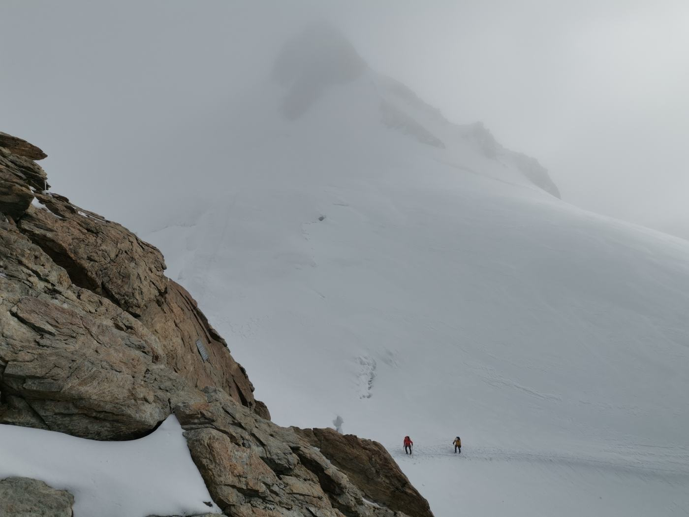

Nie każdy, kto był na szczycie,jest alpinistą

Nie każdy, kto był na szczycie, jest alpinistą
Idziesz od ośmiu godzin.
Nogi masz ciężkie. Czujesz, jak pulsują.
Coraz trudniej złapać oddech.
Szczyt jest już tak blisko.
Chmury oplatają słońce.
Zrywa się wiatr. Słyszysz, jak gwiżdże na grani.
Na twarz spadają pierwsze krople.
Gdzieś w oddali pada strzał.
Nie.
To raczej grzmot.
Pada coraz mocniej.
Błysk.
Liczysz do dziewięciu.
Grzmot.
Planowałeś to od miesięcy.
Błysk.
Tym razem doliczasz do sześciu.
Jesteś już tak blisko…
Idziesz dalej?
Decyzja zapadła. Idziesz dalej. Nie wiesz jeszcze, czy była dobra. Ale historię już masz.
Opowiesz potem o determinacji i o tym, że nie odpuściłeś, kiedy zrobiło się trudno.
Decyzja zapadła. Zawracasz. Nie wiesz jeszcze, czy była dobra. Ale historię już masz.
Opowiesz potem o odpowiedzialności i o tym, że wiedziałeś, kiedy się wycofać.
Oprawisz ją w piękną ramkę. Opowiesz tak, żeby miała sens. W sieci wymienisz się przepięknymi kadrami.
Przecież w tej opowieści i tak jesteś na szczycie.
Zresztą… nie tylko Ty. W naszej branży wszyscy są już na szczycie. Eksperci od wszystkiego. Wytwórcy skomplikowanych pojęć. Z każdym rokiem przybywa ich coraz więcej, a na szczycie robi się coraz ciaśniej. Próbujesz wejść inną drogą? Uważaj — oni wiedzą lepiej.
Często myślę o tym, jak te wszystkie osoby tam weszły. Ilu jeszcze zmieści się na szczycie? Kto spadnie pierwszy?
A gdybym powiedział, że nie jesteś tak dobry, jak myślisz? Że może zabłądziłeś? Że utknąłeś i nie wiesz, jak zejść? Że siedzisz tam od tak dawna, że nie widzisz już, jak bardzo przypominasz setki innych turystów?
Przecież stoicie na tym samym szczycie i podziwiacie te same widoki. Recytujecie te same wzniosłe słowa, a mimo to patrzycie na resztę z góry.
Łatwo oceniać, prawda?
A co, jeśli to wszystko było iluzją? Ten szczyt, ta kariera? Może zapomnieliśmy, jak stawiać kroki. A może nigdy tego nie potrafiliśmy?
Czy pamiętamy, jak wygląda droga na szczyt? Czym jest zmęczenie, dyskomfort i ból? A błędy? Czy w swojej doskonałości jeszcze je dostrzegamy?
Zaprojektowaliśmy idealny obraz siebie. I pokochaliśmy go.
Mówimy ze szczytu pewnym głosem. Na scenach. W sieci. Przy stołach, przy których zapadają decyzje.
Gdzie kończy się obraz, a zaczyna człowiek?
Ze szczytu łatwo snuć piękne historie. Wdrożyliśmy, pokazaliśmy, opisaliśmy i poszliśmy dalej. Ale czy ktoś wrócił to wszystko sprawdzić? Większość z nas nigdy się nie dowiedziała, czy miała rację.
Możesz mieć w portfolio setki szczytów i mnóstwo pieczątek w górskiej książeczce. Ale góra jest głucha na to, co o sobie mówisz. Nie widzi Twoich barwnych prezentacji ani wspaniałych KPI. Ona po prostu jest. Patrzy uważnie, gdzie stawiasz stopy. I nie przegapi chwili, w której podwinie Ci się noga.
Więc zanim pójdziemy dalej, jedno pytanie:
Czy naprawdę wiesz, jak się wspinać?


1. Pilsko
Kiedy myślę o swoim dzieciństwie, myślę o Beskidach. Pasję do gór zaszczepił we mnie ojciec i została ze mną do dziś. Co roku robi się bardziej głodna, a ja wciąż ją karmię. Bo to już dawno coś więcej niż pasja. To moja filozofia, którą staram się kierować także w projektowaniu.
Mógłbym teraz napisać, że góry potrafią sporo nauczyć. Że nie liczą się z Twoim planem ani ze zmęczeniem. Że były tu przed nami i zostaną długo po nas. Wiem, brzmi to jak przemowa z pewnej znanej sceny albo złota myśl z kalendarza. Dlatego zacznijmy od początku.
Czy pamiętasz swój dziecięcy szczyt? Niekoniecznie pierwszy, ale taki, który udało Ci się zdobyć i z którego byłeś naprawdę dumny. Tylko Ty i góra, i być może bliscy, którzy szli obok. Czy pamiętasz, jak wyglądał ten dzień? Jaka była pogoda?
Moim jest chyba Pilsko, zdobyte od strony Sopotni Wielkiej. Minęło tyle lat, a do dziś pamiętam z tamtego dnia kilka bardzo wyraźnych kadrów. Ciepły, słoneczny dzień. Wodospad, który robił na małym człowieku ogromne wrażenie. Ból dziecięcych nóg. I irytowanie taty ciągłym „”.
Pytania dzieci są fascynujące. Myślę, że dziecko można zdefiniować przez świat zapętlony w „co to?” i „dlaczego?”.
Z jakiego materiału zrobione są myśli? Skoro pingwiny to ptaki, to czy robią sobie gniazda ze śniegu? Gdzie mieszka echo, kiedy nic nie mówię? Skąd góra wie, kiedy przestać rosnąć?
A czy Ty pamiętasz swoje „dlaczego”?
Dlaczego z wiekiem przestajemy pytać? A jeśli już pytamy, to z ciekawości czy dlatego, że tak wypada?
Często to nie ciekawość, a pięknie zainscenizowana gra. Pytania, które nie szukają odpowiedzi. Zabawa w chowanego, w której nikt nie szuka. Kurtuazja? Albo wygodny sposób na zaznaczenie obecności na kolejnym spotkaniu o problemie, który omawiamy od pół roku.
Czasami to nie kurtuazja. Czasami to po prostu strach.
Gdzie się podziało nasze „dlaczego”?
A przecież chwilę temu budowaliśmy konstrukcje z LEGO. Rozkręcaliśmy zabawki, żeby zobaczyć, co jest w środku. Gorzej potem szło ich ponowne składanie. Stawialiśmy architektoniczne dzieła sztuki z desek i gałęzi, a czasem z koców, stołów i puf. Rysowaliśmy kredą tory wyścigowe, a naszymi samochodami były zwykłe kapsle po piwie. Chociaż sama ta zwykłość już była niezwykła.
Być może LEGO było moim pierwszym design systemem. Konstrukcje z puf przechodziły testy użyteczności z udziałem moich kuzynek. A tory wyścigowe były pierwszymi ścieżkami użytkownika.
Mieliśmy to wszystko. Tylko nikt tego tak nie nazywał. Wystarczała ciekawość i potrzeba sprawdzenia:
„Co się stanie, jeśli zrobię to inaczej?”
Nie chodziło o to, żeby od razu zrobić coś idealnego. Chodziło o to, żeby spróbować.
Rozebrać. Złożyć. Zmienić. Sprawdzić. Czasem włożyć do ogniska i spalić. A potem spróbować jeszcze raz. I jeszcze raz.
Do dziś zresztą rozkręcam rzeczy, składam je, sprawdzam i zmieniam. Może rzadziej spalam. Czasem dlatego, że coś mnie po prostu wkurza, a czasem z czystej ciekawości. Nie po to, żeby ocenić — po to, żeby zobaczyć, dlaczego ktoś podjął taką decyzję.
Beskidy to był poligon idealny. Ich łagodna natura i dziecięca ciekawość — trudno o lepsze połączenie.
Piękno tych terenów sprawiało, że odliczałem dni do kolejnego wyjazdu. Z każdą wizytą poruszałem się po nich sprawniej. Z każdą herbatą wypitą w ich towarzystwie czułem się pewniej. Stały się moim domem.
Mimo młodego wieku wiedziałem, którędy najszybciej wejść. Gdzie skręcić wśród nieoznakowanych ścieżek. Czego spodziewać się na wybranej trasie i jak suchą stopą przejść przez strumień po ulewie. Niejeden dorosły mógłby mnie zapytać o drogę.
Byłem bardzo dobry w poruszaniu się po znanym terenie.
Wtedy jeszcze nie wiedziałem, że nie wszystkie góry wyglądają tak samo. Ani tego, jak brutalne może okazać się wyjście poza wydeptany szlak.
do końca wędrówki ok. 69 min


2. Dolina Pięciu Stawów
Na studiach pierwszy raz pojechałem w Tatry. Tydzień spędzony z przyjaciółmi w schronisku w Dolinie Pięciu Stawów całkowicie przeprojektował sposób, w jaki patrzę na świat.
Wizualnie — księżycowe wręcz piękno.
Kondycyjnie — o wiele cięższe doświadczenie.
Ekspozycyjnie — trochę strasznie.
Wszystko było nowe, a każda góra skrywała swoje tajemnice. Szybko okazało się, że nie wystarczy znać drogi. Trzeba jeszcze wiedzieć, jak się po niej poruszać.
Pamiętam pierwszą styczność z łańcuchami. Pamiętam też świeżo poznaną zasadę trzech punktów podparcia. Gdyby ktoś wtedy spojrzał na , zobaczyłby, jak mało jest w nich pewności siebie. Byłem turystą na obcym terenie.
I jak to z turystami bywa, porwałem się na klasyka. Orla Perć.
Nigdy nie zapomnę zdziwienia, kiedy udeptana ścieżka się skończyła, a przede mną stanęła pionowa ściana.
Ściana. Koniec ścieżki. …
Zrobiłem najtrudniejszy polski szlak spontanicznie. Bez wiedzy. Bez planu. Bez kasku. W jeansach. Do końca nieświadomy, czego ten szlak wymaga. Raz zrobiło się naprawdę niebezpiecznie w okolicy Granatów.
Nie traktuję tamtej wyprawy jako błędu. Raczej jako kamień milowy. Przeszedłem ten szlak — ale nie dlatego, że umiałem. Dlatego, że miałem szczęście.
Wtedy myślałem inaczej. Wtedy myślałem, że dałem radę.
Z czasem zrozumiałem, że odwaga i brak świadomości ryzyka to nie to samo.
I mogę dziś powiedzieć, że zrobiłem Orlą Perć. To prawda. Tak samo prawdą jest, kiedy ktoś pisze w CV o udziale w dużym projekcie. Jedno i drugie brzmi dobrze. Tylko że za każdym z tych zdań mogą stać dwie różne historie:
„Byłem przy tym.”
„Podjąłem tę decyzję i jej broniłem.”
Na zdjęciu ze szczytu nie widać, kto szedł za kim, a kto wybierał drogę. Nie widać też, czy ktoś stoi tam dzięki swoim decyzjom, czy tylko dzięki szczęściu. Wynik nie zawsze jest dowodem kompetencji.
Sam tak pisałem. Sam miałem w projektowaniu swoje jeansy. Sam byłem pasażerem przy decyzjach, które zapadały przy stole. Wchodziłem w problemy, których jeszcze dobrze nie rozumiałem, z przekonaniem, że skoro potrafię coś zrobić, to znaczy, że wiem, co robię. Mimo wszystko często stawiałem na swoim. Bo przecież byłem ekspertem.
Chyba każdy ma takie momenty. Różnica polega na tym, czy po czasie potrafimy je rozpoznać.
Ile razy biznes spojrzał na Ciebie jak na turystę w jeansach?
I ile razy miał rację?
Ile razy byłeś tylko pasażerem?
A może po prostu dopisała Ci pogoda?
Wróciłem do domu z dziwnym głodem. Wróciłem w Beskidy i zacząłem eksperymentować. Warianty nocne. Zimowe. Na azymut. Samotne i z przyjaciółmi. Czasem kilkudniowe. Potem to samo, tylko innymi drogami i w innym tempie.
Chciałem poznać górę z każdej możliwej strony. Ukraść trochę jej tajemnic. Zrozumieć, jak się zmienia i jak ja się przy tym zmieniam. Okazało się, że znajomość Beskidów przestaje wystarczać, kiedy największym wyzwaniem nie jest już znalezienie drogi, tylko własna głowa.
Przyszedł czas na lęk wysokości. Ferraty. Wspinanie w Jurze. Drogi taternickie. Dłonie coraz rzadziej zdradzały niepewność. Potem kursy i podejścia alpejskie. Kolejne góry i kolejne wyzwania.
I chyba w tym momencie zacząłem rozumieć coś ważnego:
Im więcej wiem o górach, tym bardziej wiem, jak dużo jeszcze o nich nie wiem.
do końca wędrówki ok. 66 min


3. Kozi Wierch
Na Kozim Wierchu, najwyższym szczycie leżącym w całości po polskiej stronie, byłem dwa razy. Najpierw jako turysta, bodajże w 2013 roku. Potem dwanaście lat później, jako ktoś, kto doceniał już piękno tego terenu i zaczynał je lepiej rozumieć.
Oba razy szedłem tą samą drogą: czerwonym szlakiem przez Zawrat, gdzie zaczyna się Orla Perć. Na szczyt można też wejść łatwiejszym, czarnym szlakiem od Pięciu Stawów. Zdjęcie ze szczytu będzie takie samo. Przeżycie zupełnie inne.
Z pierwszego wejścia pamiętam niewiele. Większość chwil, którymi dziś pewnie bym się delektował, wypełniał strach. Może nie paraliżujący, ale wystarczający, żebym nie ufał własnym ruchom. Nogi miałem z galarety, co potwierdzi kolega, który mnie wtedy widział. Czasem się zastanawiam, czy wiedziałbym, co robić, gdyby w pobliżu nie było innych ludzi. W każdym razie jakoś ukończyłem ten szlak. Jakoś znalazłem się na szczycie. W jeansach. Oczywiście zrobiłem zdjęcie. . Rozdział zamknięty, a ja nieprędko myślałem o powtórzeniu tego wyczynu.
Mimo wszystko byłem z tego dumny. Orla Perć stała się mocnym punktem mojego górskiego CV. Minęło sporo lat, zanim postanowiłem wrócić i sprawdzić, ile tak naprawdę zależało od szczęścia.
Tym razem z każdym krokiem rozpoznawałem charakterystyczne formacje skalne. Przypominałem sobie konkretne miejsca i utrudnienia, które wryły mi się w pamięć. Mogłem zmierzyć się z tym samym terenem jeszcze raz. I wiesz co? Każdy krok był przemyślany, a uśmiech nie schodził mi z twarzy. Było mi też lżej. Nie wlokłem już ze sobą lęku wysokości.
Nic się nie zmieniło (no, może poza słynną drabinką). Zmieniłem się ja.
I dopiero tam naprawdę poczułem różnicę. Za pierwszym razem przeszedłem ten szlak jako pasażer. Ktoś, kto chciał tylko odhaczyć kolejną „fajną rzecz”. Teraz mogłem zrozumieć tę drogę. Docenić ją. Świadomie mierzyć się z tym, co stawiała przede mną każda formacja skalna.
Świeży śnieg
Szlak to nie góra.
Możesz znać trasę. Wiedzieć, gdzie skręcić, gdzie chwycić za łańcuch i gdzie zaczyna się trudniejszy odcinek. Możesz przejść ją dziesięć razy. To nadal nie znaczy, że rozumiesz górę.
Do tego trzeba dojrzeć. A nawet wtedy nie da się jej zrozumieć do końca.
Dlaczego więc tak często ufamy jednej mapie?
W projektowaniu mamy swoje mapy. Jedną z moich ulubionych jest bezpieczne stwierdzenie: „to zależy od kontekstu”.
Oczywiście, że zależy. Problem zaczyna się wtedy, kiedy to zdanie przestaje być początkiem rozmowy, a staje się jej wygodnym końcem. Miękkim jak świeży śnieg. I równie zdradliwym. Czasem projektant nie ma argumentu. Nie zrozumiał jeszcze problemu. Albo po prostu nie wie. I wtedy co? To zależy od kontekstu.
Albo sięgamy po drugą mapę: mądrze brzmiący termin, za którym łatwo się schować. Przykładem mogą być heurystyki Nielsena. Mało kto przy stole wie, co to jest. I nikt nie dopyta. Bo nie wypada, a może każdy po cichu boi się skompromitować własną niewiedzą. Wielu projektantów stosuje te zasady odruchowo. Samo powołanie się na nie niczego nie wyjaśnia. Heurystyka to tylko narzędzie. Argument trzeba mieć własny.
Temat zamknięty.
Szlak zaliczony.
Jeszcze tylko zdjęcie.
.
Możemy iść dalej.
Przecież jesteśmy ekspertami.
Sam nieraz tak robiłem. Dziś mam własny test: jeśli nie potrafię wyjaśnić decyzji w dwóch prostych zdaniach komuś spoza zespołu, to zwykle znaczy, że sam jej jeszcze nie rozumiem.
Przypomina mi się dokument „Climbing Blind” o niewidomym wspinaczu, który prowadził drogę na morskiej iglicy u wybrzeży Szkocji. Jego partnerka stała niżej i głosem nakierowywała go na kolejne chwyty. Żadnych wykładów. Żadnych skomplikowanych pojęć. Tylko tyle, ile trzeba, żeby wiedział, gdzie sięgnąć dalej1.
Gdyby mówiła do niego tak, jak my mówimy przy stole, nie ruszyłby z miejsca. Trudne słowa świetnie maskują niewiedzę. Brzmimy mądrze, wszyscy kiwają głowami, a potem każdy wychodzi ze spotkania z inną wersją tego, na co się zgodził.
Istnieje jeszcze trzecia mapa, która w rozmowie wygląda wyjątkowo elegancko: „badania pokazały”.
Kiedyś zapytałem wprost: jakie badania? Co dokładnie pokazały? Wyobraź sobie zdziwienie projektanta na dużo wyższym stanowisku niż moje. Chyba nikt wcześniej nie zadał mu tak prostego pytania. Badania nagle przestały istnieć. Ta mapa nigdy nie została narysowana. A tyle razy wytyczała ścieżkę dla całego zespołu.
Czasami ta mapa rzeczywiście istnieje. Tylko pokazujemy jej skrawek. Osiem wywiadów, z których w prezentacji cytuje się dwa. Te, które pasowały pod tezę. Reszta zostaje w pliku, do którego nikt nie wróci.
Bywa też, że badanie jest badaniem tylko z nazwy. Użytkownikom, czasem kilku naraz, prezentuje się gotowe rozwiązanie i pyta, czy je rozumieją. Odpowiada jeden, pozostali przytakują, bo tak wypada. Ktoś czegoś nie rozumie? Spokojnie, prowadzący wyjaśni nawet najbardziej skomplikowane flow. Badanie zamienia się w demo, a demo w instrukcję obsługi. Tylko że prowadzący nie pojedzie do klienta razem z produktem. A w raporcie i tak przeczytamy: „Nowa funkcjonalność jest w pełni zrozumiała dla użytkowników końcowych”.
Nawigacja
A co, jeśli korzystamy z gotowej nawigacji, ufając, że algorytm wie lepiej? W ramach eksperymentu ktoś wygenerował w jeden dzień pięćdziesiąt tysięcy stron ze statystykami. Wszystkie liczby były zmyślone. Wyszukiwarka szybko je odrzuciła, ale modele językowe sięgały po nie jeszcze przez wiele miesięcy. A za modelami — publikacja naukowa i raport inwestycyjny2.
Nikt nie sprawdził. Wystarczyło, że liczby pasowały.
To jak szlak dorysowany na mapie. Kolejni go przerysowują, bo przecież jest na mapie. Turyści nim idą, bo widzą go we wszystkich aplikacjach. Nie trzeba nikogo, kto celowo przepisuje rzeczywistość. Sami to robimy — przestajemy patrzeć na teren.
Dlatego kiedy ktoś opowiada mi o swoim researchu, najciekawsze pytanie nie brzmi „co wyszło?”. Brzmi: „co znaleźliście takiego, co Wam nie pasowało?”. Jeśli nie ma odpowiedzi, to nie były badania. To była mapa narysowana pod trasę, którą i tak chcieliśmy iść.
Bo po kontakcie z terenem rzadko zmieniamy naszą mapę. Wolimy zmienić opowieść o tym, co tam zobaczyliśmy.
Załóżmy jednak, że robimy wszystko jak należy. Uwzględniamy kontekst, mamy własne argumenty, dobre narzędzia i rzetelne badania. Czy dobra mapa wystarczy?
Mont Blanc jest dobrym przykładem. Droga, którą przez lata opisywano jako klasyczną, wciąż widnieje na mapach w niezmienionej formie. Ale sama góra nie jest już taka sama.
Topnieje lód. Rozmarza zmarzlina, która dotąd trzymała skały na miejscu. Obrywów jest dziś około dziesięciu razy więcej niż dwie dekady temu. Latem 2026 na włoskiej drodze lodowiec był tak poorany szczelinami, że miejscowi przewodnicy czasowo przestali prowadzić tamtędy klientów. Tego samego lata wszystkie trzy najczęściej wybierane drogi na Mont Blanc były jednocześnie niedostępne3. A mapa nadal grzecznie pokazuje tę samą linię.
Mapa nie musi być zła, żeby zaprowadzić Cię w złe miejsce. Wystarczy, że przestała pasować do terenu.
Z produktami jest identycznie. Zmienia się technologia, rynek, zachowania użytkowników i możliwości biznesu. To, co działało bezbłędnie trzy lata temu, dziś może być przepisem na katastrofę.
Czasem mapy nie wybierasz sam. Dostajesz ją gotową: ticket w Jirze opisany jeden do jednego. Ustalenia zapadły wcześniej, bez Ciebie. Ty masz tylko „narysować”.
Kolorujesz. Czy nadal jesteś projektantem? Jasne, to zależy.
Od kontekstu.
Czasem dostajesz gotową mapę nie dlatego, że jest najlepsza. Dostajesz ją, bo ktoś uważa, że nie poradzisz sobie z czytaniem terenu. Albo dlatego, że organizacja wciąż pamięta poprzednią wyprawę, która skończyła się źle.
A prowadzenia nie dostaje się na prośbę. W ścianie nikt nie puszcza partnera przodem tylko dlatego, że bardzo tego chciał. Puszcza go wtedy, kiedy widział, jak się porusza i jak radzi sobie w trudnym terenie.
Więc weź jeden mały fragment. Zrób go inaczej, niż mówi ticket. I pokaż różnicę. Nie musisz zmieniać świata. Wystarczy, że pokażesz, że mogło być inaczej.
Możesz świetnie znać Figmę, design system i branżowe standardy. To jest wartościowa kompetencja. Ale czym innym jest znajomość wydeptanej ścieżki, a czym innym sztuka poruszania się w ciężkim terenie.
Dobry projektant nie musi znać każdej góry.
Powinien umieć poruszać się po górach.
do końca wędrówki ok. 60 min


4. Mnich
Kiedy stoisz nad Morskim Okiem, wzrok sam ucieka w górę, na ostrą skalną iglicę. To Mnich. Z dołu wygląda na niedostępnego i jest w tym sporo prawdy, bo na jego wierzchołek nie prowadzi żaden wydeptany szlak. Tam kończy się chodzenie, a zaczyna wspinaczka.
W drodze z Palenicy postanowiłem, że kiedyś tam stanę. Jakiś czas później patrzyłem na Tatry z jego szczytu. Dopiero tam dotarło do mnie, ile pracy kosztowało to jedno postanowienie.
Dlatego Mnich jest dla mnie obrazem momentu, w którym przestajesz myśleć o każdym ruchu osobno. Bo za tym, że przestajesz o nich myśleć, stoją setki ruchów, o których kiedyś myślałeś bardzo długo.
Wyobraź sobie, że jesteś w skale. Wspinasz się. Prowadzisz. Przed Tobą kolejna decyzja: gdzie się wpiąć, gdzie osadzić asekurację. Czas gra na Twoją niekorzyść. Żeby to zrobić, musisz wykonać ruch, którego nie jesteś do końca pewien. Przenieść ciężar ciała. Puścić jedną rękę. Zaufać nogom. Przedramiona puchną. Pojawia się zimny pot. Zaraz skończy się paliwo, choć bak był przed chwilą pełen. I w końcu decydujesz się na ten jeden ruch, od którego zależy, czy utrzymasz się w ścianie…
Do tego jednego ruchu dochodzi się długo. Czasami całe życie. Na początku ktoś mówi Ci, co zrobić. Próbujesz. Nie wychodzi. Próbujesz jeszcze raz. Nie wychodzi. Jeszcze raz. I jeszcze raz. Aż któregoś dnia Twoje ciało zaczyna rozumieć. Zaczynasz wiedzieć, co zrobić, zanim zdążysz to nazwać.
To już nie teoria.
To pamięć mięśniowa.
Michael Polanyi napisał kiedyś, że wiemy więcej, niż potrafimy powiedzieć.
Doświadczony wspinacz czuje, pod jakim kątem ustawić ciało, żeby odciążyć przedramiona. To opiera się na prawach fizyki, ale nikt nie wykonuje w głowie obliczeń. Nie da się też precyzyjnie wyjaśnić słowami, jak mocno docisnąć but na wyślizganym stopniu albo jak ułożyć dłoń na obłym chwycie. Nie każdy patent da się zwerbalizować. To się szlifuje latami.
Z projektowaniem bywa podobnie. Patrzysz na produkt kilka sekund i widzisz, jak jest zbudowany. Od razu czujesz też, że coś w nim zgrzyta, choć twarde argumenty przychodzą dopiero po chwili. Najpierw reaguje wyrobiony odruch, potem pojawiają się słowa. I te słowa muszą przyjść, bo dopiero one zamieniają się we wskazówki dla zespołu: dokąd iść i dlaczego właśnie tędy.
Każdy z nas zaczynał inaczej. Niektórzy od kursu i nie ma w tym nic złego. Kurs daje mapę, i to jest naprawdę sporo. Ale czucia nie da. Własne odruchy trzeba wypracować samemu, w nieznanym i coraz trudniejszym terenie.
Setki godzin. Powtórzenia. Błędy. Zwątpienie. Obdarte palce, naciągnięcia, zakwasy. Czasem krew. I jeszcze jedna próba. I kolejna.
Ale tak właśnie stajemy się praktykami.
Właśnie dlatego, kiedy wróciłem na Orlą Perć dwanaście lat później, szedłem zupełnie inaczej. Pewniej. Skała była ta sama, ekspozycja też. Zmieniło się ciało. Dłonie i stopy same znajdowały chwyty i stopnie, zanim głowa zdążyła je nazwać. Ciało pamiętało lata w skale.
Projektowania uczy się tak samo. Kiedy ktoś pyta mnie, jak zacząć w designie, nie zaczynam od teorii. Zaczynam od budowania.
Weź rozwiązanie, które Ci się podoba. Spróbuj zrozumieć, jak działa. Dlaczego jest dobre? Jak zostało zbudowane? Co sprawia, że właśnie ten element działa tak, a nie inaczej?
A potem spróbuj je odtworzyć. Nawet jeden do jednego.
Nie po to, żeby je skopiować. Po to, żeby zobaczyć, czego wcześniej nie widziałeś.
Bo kiedy zaczynasz naprawdę budować, zaczynasz też naprawdę pytać. A kiedy zaczynasz pytać, zaczynasz rozumieć. I wtedy teoria przestaje być zbiorem definicji. Zaczyna odpowiadać na pytania, które sam już masz.
Z czasem pojawia się coś, co można nazwać intuicją. Ale intuicja nie bierze się znikąd. Stoją za nią wcześniejsze próby, błędy i obserwacje. To doświadczenie, które jeszcze nie znalazło słów.
Często chcemy za szybko osiągnąć kolejny etap, nie wiedząc, że jeszcze nie jesteśmy gotowi. Głowa nie jest spokojna, ciało nie nadąża. I dlatego odpadamy od ściany. Czasem zatrzyma nas asekuracja. A czasem upadek bywa naprawdę bolesny.
Jest też odwrotny błąd: paraliż. Strach każe kurczowo ściskać chwyt. Skóra wokół paznokci bieleje. Macasz po raz piąty te same krawędzie i szukasz lepszego stopnia tam, gdzie go nie ma. Głowa podsuwa najczarniejsze scenariusze. A w skale bezruch spala siły najszybciej. Czasem nie da się już zawrócić, dopóki nie dojdziesz do kolejnego stanowiska. Wtedy stanie w miejscu też jest decyzją. Często najgorszą, i to nie tylko dla Ciebie, ale też dla partnera, który trzyma Twoją linę.
W projektach robimy to samo, tylko nazywamy to ostrożnością. Jeszcze jedno spotkanie. Jeszcze jedna akceptacja. Jeszcze jeden wariant do porównania. A zwlekanie kosztuje czasem więcej niż pomyłka. Kiedy w końcu ruszasz, spokojna głowa nie bierze się z nagłej odwagi. Bierze się z powtórzeń, które ciało zna na pamięć.
W ścianie informacja zwrotna przychodzi natychmiast. Zrobiłeś zły ruch — odpadasz. Nie ma dyskusji. Nie ma prezentacji. Nie ma roadmapy. Nie ma KPI.
W projektowaniu rzadko dostajesz taką odpowiedź. Wdrażasz, idziesz dalej, a produkt zmienia się z dziesięciu innych powodów. Można przepracować w tym zawodzie wiele lat i nigdy się nie dowiedzieć, które ruchy były dobre.
A niektóre były po prostu szczęśliwe. Tylko że tego też się nie dowiesz.
Odpadałem kilka razy. Najboleśniej wtedy, kiedy chciałem zmienić wszystko za jednym podejściem. Pół roku projektowania nowych mechanik i eleganckich rozwiązań dla znanej marki e-commerce. Zamiast iteracyjnie, wyciąg po wyciągu — wszystko naraz. Co mogło pójść nie tak?
Bolało.
To, co zaprojektowałem, było dobre. Do dziś tak uważam. Tylko że skończyły się środki, zanim skończyła się droga.
Doświadczenie nie polega na tym, że wiesz wszystko. Polega na tym, że zanim wejdziesz w ścianę, umiesz oszacować, ile będzie Cię kosztować.
do końca wędrówki ok. 56 min


5. Marmolada
Mieszkam na dziesiątym piętrze. Winda działa, jeżdżę nią codziennie i nie mam z tym problemu. Jestem raczej wygodny.
Mimo to czasem wchodzę pieszo. Winda jedzie trzydzieści pięć sekund. Schodami to niecała minuta i pięćdziesiąt sekund. Tętno jeszcze nie zawałowe. Może nie jestem jak szerpa, który z siatkami z osiedlowego sklepu zdobywa kolejne obozy. I nie robię tego dla zdrowia. Raczej z ciekawości. Po roku jeżdżenia windą przestaje się czuć, ile to właściwie jest — dziesiąte piętro.
A Ty? Kiedy ostatnio wszedłeś na swoje piętro po schodach?
Marmolada nie jest jednym szczytem. To cały masyw, najwyższy w Dolomitach, z lodowcem i kilkoma wierzchołkami. Najwyżej sięga Punta Penia — 3343 metry.
Marmoladę można zdobyć, wjeżdżając na Punta Rocca. Trzy odcinki kolejki i jesteś na górze. Oszczędzasz czas. Oszczędzasz siły. Stajesz na tarasie, robisz zdjęcie panoramy. . Kadr się zgadza.
Tyle że Punta Rocca ma 3265 metrów. Do najwyższego wierzchołka jest stamtąd siedemdziesiąt osiem metrów w pionie. I cała reszta drogi, na którą trzeba mieć sprzęt i umiejętności.
Z tarasu widać go doskonale.
Można też wejść ferratą, czyli żelazną drogą: szlakiem ubezpieczonym stalową liną i innymi metalowymi ustrojstwami. Tutaj prowadzi zachodnią granią i nazywa się Cresta Ovest. W teorii technicznie nie jest trudniej niż na Orlej Perci. W praktyce różnie bywa. Spora ekspozycja. Czasem oblodzenia i pogoda, która zmienia wszystko. Prawie 1300 metrów przewyższenia. Narastające zmęczenie. Mijają godziny, a góra wciąż daje o sobie znać. W końcu stajesz na wierzchołku z zupełnie innym bagażem.
Jest jeszcze droga klasyczna przez lodowiec, z rakami, czekanem i liną. I jest południowa ściana — ponad sto ekstremalnych dróg wspinaczkowych, o których większość ludzi na tarasie nigdy nie usłyszy.
Na Cresta Ovest mijałem różnych ludzi. Najbardziej zapamiętałem parę, która szła na lotnej asekuracji, w pełnym alpejskim szpeju. Sprzętu mieli więcej, niż wymagała droga. Umiejętności — mniej, niż wymagał sprzęt. Przez brak pewności i nadmiar rzeczy do ogarnięcia zastygali w miejscach, w których nie powinno się stać. Wstrzymywali ruch. Dokładali zmiennych. Cudzych zmiennych, które musiałem uwzględniać.
W takiej sytuacji tkwisz w niewygodnej pozycji, a ktoś przed Tobą nie może się zdecydować, czy iść dalej. Przedramiona pieką, zaczynasz się „bułować”. Możesz tylko czekać.
Każda z tych dróg prowadzi na górę. Ale każda uczy czegoś innego.
Jest za to jeden wspólny mianownik. Wszyscy powiedzą potem to samo: byłem na Marmoladzie.
Sztampa
Coraz więcej osób wybiera kolejkę.
Nie chodzi o to, żeby z niej nie korzystać. Sam korzystam, bo czasem to najrozsądniejsza decyzja, jaką można podjąć.
Chodzi o różnicę między tym, że wjechałeś, a tym, że myślisz, że wszedłeś. A ta różnica powoli się zaciera.
Dziś stworzenie produktu to jedno zdanie.
. Kolejna aplikacja o tym samym.
. Kolejny wtórny design.
. Research bez pokrycia.
I na każdym etapie — — foteczka ze szczytu.
Zalaliśmy internet falą sztampy. Wtórnych rozwiązań jest dziś tyle, co turystów w sierpniu nad Morskim Okiem. Mało kto weryfikuje, czy to, co wypluł model, ma w ogóle sens. Mało kto już cokolwiek weryfikuje. Byle szybko odhaczyć i pchnąć dalej.
A na tej fali zaczynają się uczyć kolejne modele. Niesprawdzone wyniki stają się ich podręcznikiem. Błędy przechodzą z pokolenia na pokolenie, a po drodze znika margines — to, co rzadkie i nietypowe. Aż zostaje sama średnia, sama przeciętność4. I sami zaczynamy nią nadpisywać rzeczywistość.
Raz po raz widzę, jak ktoś powołuje się na artefakty produktu, które powstały przez pomyłkę modelu. .
Potem te pomyłki trafiają do ticketu. A tam kolejne halucynacje w opisie zadania. Czytam i mam w głowie jedno wielkie .
W międzyczasie ktoś postanawia pominąć proces designu i na własną rękę generuje makietę do zakodowania. Że nie ma sensu, chyba nie muszę dodawać. .
Nie wiem, jak to dostaje akcept, ale ten fascynujący proces nabiera tempa. Kod też powstaje na skróty, agentem. Tylko że kolejka staje na pierwszym code review. .
Potem spotkanie. Bo jednak coś poszło nie tak. A po spotkaniu transkrypcja przemielona przez model i rozesłana po zespole. Autor nawet jej nie przeczytał. Dowiesz się z niej o ustaleniach, które nigdy nie zapadły. Poznasz też osobę, która rzekomo pracuje z Tobą przy projekcie. Nie ma jej nawet w firmie. .
A najśmieszniejsze jest to, że zespół wie. Tylko na tym etapie nie ma już jak zawrócić.
…
„Poprawimy w następnym sprincie”.
To jak wspinaczka na linie, na której zamiast podwójnej ósemki zawiązaliśmy kokardkę. Może wytrzyma.
I to się naprawdę dzieje. To właśnie skutek dążenia na skróty. Bezrefleksyjnego klikania.
Przychodzi następny sprint, a użytkownicy zaczynają zgłaszać dziwny błąd. Zespół po raz kolejny próbuje go naprawić. To znaczy: prosi o to model. Model sobie nie radzi. Idą więc do autora rozwiązania. Autor też pyta model.
I tak siedzą wszyscy i podziwiają. Podziwiają, jak schodzą na nich kolejne lawiny tekstu. Każda przysypuje ich trochę bardziej. Zastanawiam się, czy ktokolwiek ich odkopie.
Model brzmi pewnie. Tylko nikt już nie potrafi odsiać, co z tego jest prawdą.
Ale spokojnie. Poprawimy w następnym sprincie.
Patrzę na to wszystko z boku i widzę Czupel w listopadzie. Błoto po kostki. Breja zasysa tak mocno, że jeden zły krok i zostajesz bez buta. Mokre kamienie. Drzewa bez liści. I mgła, przez którą nic nie widać dalej niż na dziesięć metrów.
Tak właśnie wygląda sztampa. .
Jesteśmy rozliczani z dowiezienia. Nie ze zrozumienia. A skoro i tak rzadko się dowiadujemy, które decyzje były dobre, to różnica między zrozumieniem a wygenerowaniem staje się w praktyce niewidoczna.
Wysiłek był kiedyś filtrem. Trzeba było kilka razy przemyśleć problem, żeby dojść do jego sedna i w ogóle zacząć pracę. Teraz cały ten etap zamienił się w skopiowanie zadania do odpowiedniego okienka. Kilka sekund. Kilka ruchów palców. .
I to jest paradoks pamięci mięśniowej. Robisz to automatycznie, a mięśnie i tak zanikają.
Przez jakiś czas różnicy nie widać. Chowa się pod ładnie wyglądającym rezultatem. Potem lata schodzą na naprawianiu produktu po dziesiątkach złych decyzji, które zdążyły zrosnąć się z jego fundamentem. A to, co wreszcie zaczęło działać, psujemy od nowa. Tym razem szybciej.
. . .
I wracamy tam, skąd wyszliśmy. Tylko z ładniejszymi ekranami.
Piszemy przy tym więcej niż kiedykolwiek. Dokumentacja, standardy, zapisy ustaleń. Tylko że czyta to już nie człowiek, a model — i to on wyciąga z tego wnioski, których nikt nie sprawdził.
AI w rękach specjalisty naprawdę jest potężnym narzędziem. Ale narzędzie nie zna kontekstu Twojego produktu. Zna wzorzec.
To trochę jak raki. Pozwalają wejść tam, gdzie bez nich byś nie poszedł. Ale jeśli ktoś nie umie się nimi posługiwać, nie zwiększają bezpieczeństwa. Czasem wręcz przeciwnie. W wariancie optymistycznym skończy się na dziurze w spodniach. W pesymistycznym — na dziurze w nodze.
Pingwin
Nie mam problemu z tym, że narzędzia są coraz lepsze. Sam coraz częściej projektuję głosem. Mówię, a słowa trafiają prosto do agenta. Zlecam zadania, iteruję, sprawdzam, zmieniam. Czasem soczyście przeklnę, bo model nie rozumie, o co mi chodzi. Albo ja nie umiem mu tego powiedzieć. A potem próbuję jeszcze raz. I jeszcze raz.
Traktuję to jak kolejną przygodę. Znowu czuję się trochę jak dziecko. Dużo czytam, żeby zaspokoić swoje „dlaczego”. To po prostu nowe narzędzie, nowy teren do poznania i nowa droga na górę, której od dawna wypatrywałem.
Pracując z modelami, szybko zauważyłem jeszcze jedno. Model nie ma tych setek prób, z których bierze się intuicja. Ma wzorce. Często nawet nie wiesz, skąd te wzorce trafiły do jego pamięci. Puszczony luzem wraca do sztampy. Dasz mu za dużo kontekstu, a rozmyje zadanie. Za mało? Wróci z czymś, co widziałeś już sto razy. Trochę jak w ścianie, gdzie wszystko zależy od balansu.
Sztuczna inteligencja nie zabiera nam góry. Zdejmuje nam z pleców część sprzętu, który do tej pory nosiliśmy sami. Tylko że sprzęt, którego nie nosisz, przestaje Cię obciążać. A mięsień, który nie jest obciążany, słabnie. Aż pewnego dnia zaniknie.
Dlatego w tym duecie prowadzimy my. Musimy wiedzieć, co chcemy zrobić. Dokąd zmierzamy. I na każdym kroku sprawdzać, czy kierunek jest właściwy.
Dziś możemy w kilka chwil wygenerować rozwiązanie, prototyp, a nawet rozebrać na czynniki pierwsze produkt konkurencji. Narzędzia pozwalają przeskoczyć etapy, które zajmowały nam dni, tygodnie, a nawet miesiące. Albo zrobić coś, czego wcześniej w ogóle nie potrafiliśmy. Nigdy w życiu nie pomyślałbym, że napiszę… ekhm… wygeneruję sterownik do własnej bieżni i w ciągu dwóch kaw zrobię z tego działającą aplikację.
Tylko że stworzenie rozwiązania często jest łatwiejsze niż zrozumienie problemu. Jeszcze trudniej samodzielnie rozłożyć go na części i ponownie złożyć. Jak zabawkę. Znaleźć zależności albo zadać to właściwe pytanie.
A najtrudniej zauważyć, że to pierwsze pytanie, od którego zaczęliśmy, było błędne. Wtedy każdy kolejny krok prowadzi w złą stronę. A my idziemy dalej, jak po lodowcu, na którym świeży śnieg przykrył szczeliny.
Słyszałem już opinię, że w dobie AI specjalista UX nie jest potrzebny. Śpię spokojnie.
Może to kwestia charakteru. Może lubisz w kółko reprodukować te same rozwiązania w ten sam sposób. W kółko i w kółko. Jak świstak. Schowany bezpiecznie w swojej norce.
Ale czy zauważyłeś, że odkąd to jest łatwe, ciągle depczesz tę samą ścieżkę? Kopiuj. Wklej.
Czy potrafiłbyś jeszcze zbudować coś od zera?
Postawić krok w nieznanym terenie.
Wymyślić coś świeżego.
Podpisać się pod czymś własnym.
Pokonać drogę na szczyt o własnych siłach.
Narzędzi można nauczyć się szybko. Myślenia już niekoniecznie.
Kiedy zdajemy się na jedno narzędzie, ono zaczyna nas definiować. Jeden poznany teren. Jeden wygodny sposób poruszania się po nim. Ale co się stanie, kiedy ten teren się zmieni? Kiedy narzędzie zawiedzie albo go zabraknie?
Kim wtedy będziesz?
Zrobiłem kiedyś eksperyment. Poprosiłem projektanta, żeby na chwilę schował do szafy dobrze znany szpej, z którym zawsze wyruszał na wyprawy. Chciałem sprawdzić, jak się odnajdzie bez swojego głównego narzędzia. Padło na vibe coding. Miał samymi słowami poprowadzić agenta i postawić prosty landing page.
Kiedy zniknął bezpieczny interfejs, zniknęły też jego myśli. Puf.
Zabrakło gotowych ekranów i komponentów. Zabrakło pomocnych ludzi z zespołu. Zabrakło trudnych pojęć i badań, za którymi łatwo się schować. Został sam ze sobą. I szybko okazało się, że nie potrafi precyzyjnie opisać, co właściwie chce zbudować. Ani dlaczego ma to działać właśnie tak. Nowy teren, a on bez mapy.
Wynik?
Zamiast zwinnej kozicy górskiej dostaliśmy chaotycznego pingwina, który niezgrabnie próbował ją naśladować.
Uwielbiam pingwiny. Tylko nie jestem pewien, czy chciałbym z którymś wybrać się na Mont Blanc.
Supermoce
Kod coraz łatwiej wygenerować. Nawet bez wiedzy technicznej. Tylko czy produkt, który powstaje na tym fundamencie, będzie stabilny? Czy da się go skalować? Czy nie utonie w morzu przeciętności?
Dziś każdy z nas dostał supermoc tworzenia. Błyskawiczny wjazd kolejką w trudno dostępne rejony. Widoki z pięknego tarasu. Łatwo poczuć się jak na szczycie, kiedy wydaje nam się, że nikogo już nie potrzebujemy. Biznes robi się sam. Makiety powstają same. Kod generuje się sam. Nawet nie trzeba tego sprawdzać. Przecież działa. Prawda?
Ot, taki paradoks: narzędzie, które w kilka sekund rozwiązuje jeden problem, w tym samym czasie potrafi stworzyć kilka kolejnych.
A chwilę później okazuje się, że ostatni wagonik w dół właśnie odjechał. Rozwiązania nie zarabiają na siebie. Użytkownicy nie chcą klikać. Kod wykrzacza się na każdym kroku. Wszystko staje.
Wtedy nagle wszyscy szukają projektanta, którego wcześniej pominęli. Developera, który jako jedyny ogarniał ten bajzel. Managera, który potrafił spiąć wszystko w całość. A z każdym kolejnym potknięciem… cóż, zejście robi się coraz ciekawsze.
Dopiero na zejściu widać, ile w budowaniu produktu zależy od tego, co dzieje się, zanim powstanie pierwsza linijka kodu. I od tego, co dzieje się długo po niej.
Kiedyś mówiło się: pokaż mi swój kod, a powiem Ci, jak myślisz.
Dziś wystarczy prompt.
do końca wędrówki ok. 46 min


6. Everest
Nigdy nie byłem na Evereście. Nigdy nawet nie byłem wyżej niż pięć tysięcy metrów. Trudno mi sobie wyobrazić, co czuje człowiek, który staje na najwyższym punkcie Ziemi. I ile musiał zaryzykować, żeby się tam znaleźć.
Czasem myślę, jak by to było podjąć takie wyzwanie. Czytam o logistyce, o warunkach, o tym, ile to trwa. Mowa przecież o tygodniach. Długich tygodniach w zimnie, wietrze i rozrzedzonym powietrzu. A jak już ustaliliśmy, jestem raczej wygodny.
I szczerze? Do dziś nie wiem, czy chciałbym zdobyć ten szczyt.
Zwłaszcza kiedy wraca do mnie ten znany kadr: długa kolejka ludzi na grani, ściśniętych jeden za drugim w strefie śmierci. Kolejka dłuższa niż ta pod sklepem, kiedy rzucą zgrzewkę piwa za pół ceny. Stoją i czekają, żeby za chwilę zapisać się na kartach historii. Patrzę na ten tłum i zastanawiam się, czy wszyscy przez całe życie dążyli do tego marzenia. I choć wiem, jak to zabrzmi, czy nie znalazł się tam ktoś trochę z przypadku?
Bo Everest też ma dziś swoją kolejkę linową.
Za odpowiednie pieniądze można kupić skróconą wersję tej drogi. Klasyczna wyprawa trwa około sześciu tygodni. Przyspieszona — trzy, i kosztuje o jakieś trzydzieści tysięcy euro więcej. Jest też wariant czternastodniowy, za około sto pięćdziesiąt tysięcy. Najdroższy pakiet to prywatny przewodnik, dwóch osobistych Szerpów i niemal dwieście tysięcy euro.
Aklimatyzację odbywasz przed wyjazdem. Do ośmiu tygodni w namiocie hipoksyjnym. We własnym mieszkaniu.
Operator uczciwie przyznaje, że łącznie spędzasz w niedotlenieniu więcej czasu niż przy klasycznej wyprawie. Tyle że większość z tego we własnej sypialni5. Nie oszczędzasz więc czasu. Płacisz za to, żeby nie spędzać go na górze.
I zwykle to działa. Ludzie wracają cało. Z tym jednym zdjęciem i opowieścią na całe życie. .
W środowisku górskim to gorący temat. Nie będę go komentował.
Gorzej, kiedy nieoczekiwanie zmienia się pogoda. Kiedy coś idzie nie tak. Kiedy plan się rypie. Wtedy zostajesz tylko z tym, czego nie da się kupić.
Podobne wyprawy organizujemy dziś w firmach.
Czytając portale branżowe, można szybko odnieść wrażenie, że wszyscy mają już swoich cyfrowych szerpów. Agentów, którzy automatyzują za nas każdy proces. Gdzie się nie obejrzysz, tam sztuczna inteligencja. Coraz trudniej się przed nią ukryć.
Tymczasem według badania Grupy Pracuj siedemdziesiąt procent pracujących w Polsce nigdy nie użyło AI w pracy. A spośród tych, którzy używają go regularnie, własne agenty i automatyzacje buduje zaledwie dwa procent6. Autorzy raportu ujęli to krótko: AI jest obecne w dyskusji o pracy znacznie częściej niż w samej pracy.
Obserwuję tę transformację z pierwszego rzędu. Widzę, jak z dnia na dzień rośnie wokół niej bańka. Przekonanie, że AI jest niezastąpione. Sam w niej siedzę. Niektórzy twierdzą, że lada moment pęknie. Od dwóch lat nie chce pęknąć.
Tylko że w tej samej bańce zapadają decyzje o całych zespołach.
Ogłaszamy strategię AI-first. Tniemy dwadzieścia procent zespołu. Przebudowujemy roadmapę pod technologię, o której wciąż wiemy za mało, by mieć pewne zdanie. Podejmujemy ryzykowne kroki, bo inni je podjęli. Stawiamy wszystko na jedną kartę.
Nie twierdzę, że wiem lepiej. Nie znam ich liczb.
Niepokoi mnie co innego: oni też ich nie znają.
Każdy model trzeba osadzić w procesie, a proces monitorować. Ludzi przeszkolić, a potem miesiącami poprawiać to, co z tego powstaje. A trendy się zmieniają. Czasem szybciej, niż da się odbudować zespół.
A jednak łatwiej jest pożegnać część ludzi i pokazać w tabelce, że liczby się zgadzają.
Jeśli ktoś zwalnia, zanim to wszystko się wydarzy, to nie wdrożył AI.
Zwolnił ludzi i nazwał to strategią.
I nie jest to decyzja głupia. Dla człowieka, który ją podejmuje, jest racjonalna. Działa od razu. Koszt przychodzi za dwa lata. Zwykle wtedy, gdy autor decyzji jest już na innym szczycie. Płacą ci, którzy zostali.
Trudno oczekiwać, że ktoś wybierze wolniejszą drogę, skoro rozliczamy go z wyników za najbliższy kwartał. Zwolniliśmy część zespołu, ale hej, mamy AI. Powinniśmy działać jeszcze szybciej.
Decyzja, która miała być dowodem wizjonerstwa, bywa odwrotnością wizji. Ucieczką od trudniejszej roboty: od zrozumienia, dlaczego produkt tak naprawdę nie zarabia. Od naprawy procesów, których nikt już nie ogarnia. Od spłaty długu, który narastał latami.
A może problem od początku leżał gdzie indziej? Może obiecaliśmy klientom za dużo. Może zaufaliśmy komuś, kto poprowadził nas złą drogą.
AI brzmi nowocześnie. To wygodne hasło, które potrafi wytłumaczyć wszystko: reorganizację i trudne decyzje. A przy okazji pozwala przemilczeć to, co naprawdę nie działało.
To kolejka linowa na poziomie strategii. Wjeżdżamy szybko, robimy zdjęcie. . Mówimy, że byliśmy na szczycie.
Tylko że firma została na tarasie widokowym.
Podziękowanie
Zwalniamy kogoś. Trudna decyzja, wszyscy to rozumiemy.
A potem piszemy o tym post. Że po latach spotkaliśmy tę osobę przypadkowo na mieście i że nam podziękowała. Znalazła coś lepszego. I to dzięki nam. Że czasem to, co wygląda na porażkę, jest początkiem czegoś nowego. Publikujemy. Pod spodem komentarze. Ktoś dopisuje kolejną metaforę, ktoś pisze o nowym rozdaniu kart, ktoś przywołuje teorię spalonego tosta.
Tylko że ta osoba nie odeszła sama. A jej podziękowanie może być czystą kurtuazją. Nigdy się nie dowiemy, co naprawdę o nas myśli. Ani o miejscu, z którego ją wyproszono.
Nie napisałbym takiego posta. Ale rozumiem, skąd się bierze. Łatwiej żyć z trudną decyzją, kiedy ma dobre zakończenie.
Łatwo snuć opowieść o innych. Dopisywać morał do cudzej porażki. Tylko że to nadal nie jest nasza historia.
Kilka dni później trafiam na kolejny wpis. Rekruter opisuje rozmowę z kandydatem zwolnionym w restrukturyzacji. Świetne kompetencje. Pierwsze zdanie, jakie powiedział: „Niestety padło na mnie, nie miałem na to wpływu”.
I w tej jednej chwili, według autora, stracił pozycję. Postawił się w roli ofiary.
Kandydat powiedział prawdę. Padło na niego. Nie miał wpływu. I to ma być błąd.
Dalej jest instrukcja, jak opowiedzieć tę historię, żeby miała sens. Nie mów „zwolnili mój dział”. Mów, że Twoja rola została zamknięta po restrukturyzacji pionu, a Ty zacząłeś szukać miejsca, w którym możesz ten obszar dalej rozwijać. Najlepiej dodaj jeszcze, że to był dobry moment.
Na koniec dopisek: „Proste. I prawdziwe.”
Dżizas.
Czytam to drugi raz i szukam ironii. Wchodzę na profil, przeglądam kolejne wpisy. Nie ma ironii. To na serio.
W tym samym wpisie restrukturyzacja to „normalny cykl rynkowy”, a decyzja zarządu „nie jest oceną jego wartości”. Ale jedno zdanie kandydata wystarczy, żeby tę wartość przekreślić. Firmie wolno mieć okoliczności. Człowiekowi już nie.
Pewnie znasz te memy. Po lewej: „Pomogłem szefowi zapisać PDF”. Po prawej: „Przewodziłem inicjatywom optymalizacji cyfrowej dokumentacji w celu zwiększenia dostępności plików i efektywności operacyjnej”. Pies, który szczeknął na psa sąsiada, „z sukcesem poprowadził proaktywną inicjatywę ochrony perymetru i wykrywania zagrożeń w czasie rzeczywistym”.
Sam mógłbym dopisać swój. Po lewej: „Poszedłem w góry”. Po prawej: „Zrealizowałem wielodniowy projekt eksploracji środowiska wysokogórskiego, zarządzając ryzykiem w warunkach ograniczonej dostępności tlenu. Wnioski z adaptacji do hipoksji z powodzeniem przenoszę na zarządzanie zespołem w niestabilnym otoczeniu rynkowym”.
Śmiejemy się z tego. Tylko że porada z tamtego wpisu to ten sam mem. Napisany na serio.
Zresztą tekst, który właśnie czytasz, też jest trochę krzywym zwierciadłem. Takim, w które nie zawsze wygodnie się patrzy.
To jest nasz własny Everest. Szczyt, na którym stoi kolejka ludzi z gotowymi radami na każdy temat. Każdy z flagą wbitą w wierzchołek, każdy z przepięknym zdjęciem. Wszyscy recytują te same wzniosłe słowa. Ludzie, którzy zapomnieli, jak to jest siedzieć po drugiej stronie stołu, uczą nas, jak się przy nim zachować.
Może czasem warto zejść z tego szczytu? Przejść przez cały proces jeszcze raz, tym razem jako kandydat? Zaaklimatyzować się trochę dłużej. Sprawdzić, jak kręta, dobijająca i absurdalna potrafi być ta droga.
Łatwo patrzeć ze szczytu. Gorzej z drogi, która na ten szczyt prowadzi.
Sprawozdanie z produkcji
Samo cięcie kosztów to jednak za mało. Kiedy kurz po zwolnieniach zaczyna opadać, trzeba jeszcze pokazać, że strategia naprawdę działa. Zaczyna się teatr wdrożenia.
Polityka użycia AI.
Standardy promptowania.
Wytyczne dla zespołów.
Matryca odpowiedzialności.
Rejestr przypadków użycia.
Karta oceny ryzyka.
Ktoś to wszystko pisze. W godzinach pracy. Ktoś inny mu to zlecił. Obu za to płacą. Zaglądam do tej dokumentacji. Nikt tego nie czyta.
Słyszę o ludziach, którzy całe dnie generują. Rzeczy, których nikt nigdy nie wdroży. Sterty makiet. Wysypiska dokumentacji. Slopowisko.
Przypomina mi się schronisko Podragu w Górach Fogaraskich. Ponad dwa tysiące metrów, polodowcowy kocioł, jezioro otoczone surowymi ścianami. Miejsce trochę odcięte od reszty świata. Spaliśmy tam kiedyś z ekipą. Najbardziej zaskoczyło nas to, co zastaliśmy za schroniskiem.
Wysypisko śmieci.
Z przodu widok na przepiękne góry. Z tyłu, poza kadrem, wszystko, czego nikt nie zniósł na dół.
A oni wciąż generują. Z daleka wygląda to jak praca. Może sami już wierzą, że to praca?
Ktoś spędza tydzień na wyprodukowaniu czegoś, czego przeczytanie zajęłoby zespołowi rok. Pół roku temu ta sama osoba realizowała płatne projekty.
Jeśli przesuwamy ludzi z pracy, za którą płacą klienci, do pisania dokumentów o tym, jak pracować z AI, to zamieniamy produkcję w sprawozdanie z produkcji.
I to ma być strategia?
Oszust
Praca, którą dziś generuje się promptem, była kiedyś pierwszym przystankiem naszej kariery. Nudna, powtarzalna, często odtwórcza. Ale to właśnie na niej budowaliśmy pamięć mięśniową.
Podobnie widzi to szefowa Międzynarodowego Funduszu Walutowego. Najbardziej martwią ją młodzi ludzie wchodzący na rynek pracy. Zwykle zaczynali od rutynowych zadań i stamtąd pięli się w górę. Jeśli tych stanowisk zabraknie, nie będzie od czego zacząć7.
Rynek ofert w IT pomału odbija, ale wybiórczo. Ponad połowa ogłoszeń jest dla seniorów. Dla początkujących zostaje pięć procent ofert, a składają piętnaście procent aplikacji. Trzy razy więcej chętnych niż miejsc8. A szkolenia? Obiecuje je dziś niecała połowa ogłoszeń. Jeszcze kilka lat temu ponad osiemdziesiąt procent9.
Każda firma z osobna postępuje racjonalnie, kiedy tnie juniorów. Model zrobi to dziś znacznie taniej. Suma tych racjonalnych decyzji to branża, w której za dziesięć lat zabraknie doświadczonych ludzi.
A może się mylę? Może junior z odpowiednim modelem wchodzi dziś wyżej i szybciej, niż wchodził ktokolwiek przed nim. Może to nie jest udawanie. Tlen naprawdę działa.
Czytałem o przykładach, które za tym przemawiają. Ktoś nauczył się z modelem matematyki, której nie potrafił zrozumieć z książek ani od znajomych matematyków. Ktoś inny, w piekielnie długiej sesji debugowania, rozwiązał problem, który sam model kilkakrotnie uznał za nierozwiązywalny. AI wykonało większość pracy, ale upór był po ludzkiej stronie.
Tylko że oni umieli się wspinać, zanim dostali tlen. Junior dostaje go na starcie. Na jakiej wysokości potrafi jeszcze samodzielnie oddychać? , kto sprowadzi go bezpiecznie do bazy?
Schody nie znikają. Znika umiejętność wchodzenia po nich.
W Beskidzie Żywieckim, tuż przy granicy ze Słowacją, jest szczyt, który nazywa się Oszust. Nazwa pasuje do niego jak ulał. Od strony Soblówki podejście wygląda na krótkie i niewinne. W rzeczywistości jest strome i ciągnie się dłużej, niż można sądzić na pierwszy rzut oka.
A najlepsze jest to, że nazwa też oszukuje. Część turystów, których mijałem, mówiła na niego Oszus.
Może każdy z nas ma teraz swojego Oszusta.
Ja też nie wiem, w którym miejscu tego podejścia jestem.
do końca wędrówki ok. 37 min


7. Babia Góra
Kiedyś, gdyby ktoś mi powiedział, że bał się w Beskidach, pewnie potraktowałbym to z przymrużeniem oka. To przecież łagodne góry.
Latem, przy dobrej pogodzie, wejście na Babią nie wydaje się szczególnie wymagające. Dobrze oznaczony szlak, sporo ludzi, a kopiec na szczycie widać z daleka. Wchodziłem tam też nocami, na wschody słońca. Bywałem i zimą.
Jednej nocy nie zapomnę.
Zamieć. Ślady, które zostawiałeś, znikały niemal od razu. Zimno takie, że nawet . Czynność, którą latem ogarniasz w pięć sekund, tutaj bolała. Takie sceny widziałem wcześniej tylko w filmach o najwyższych górach. A to był przecież Beskid.
Było nas czterech. Nie, chyba pięciu. Dokładnie już nie pamiętam. Ekipa, z którą wychodziłem w góry wiele razy. Mieliśmy za sobą sporo wspólnych wyjść. A jednak wtedy pierwszy raz zobaczyłem, że są autentycznie wystraszeni. Sam też nie czułem się pewnie.
Nie mogliśmy znaleźć szczytu. Babia Góra ma ogromny, charakterystyczny kopiec. Nie da się go przeoczyć. Tamtej nocy staliśmy kilkadziesiąt metrów od niego i go nie widzieliśmy. A to od niego prowadziła droga do schroniska na Markowych Szczawinach.
Żadnych śladów. Żadnych oznaczeń. Żadnego życia. Noc, biel i światło czołówek, które po kilku metrach grzęzło w gęstym śniegu. Wiatr bez przerwy smagał nas po twarzach. Dziesiątki nieoczywistych decyzji. I narastająca nerwowość.
Ten sam szlak. Ta sama góra. Zupełnie inne doświadczenie.
Kiedy robisz coś ciągle w ten sam sposób, przestajesz patrzeć pod nogi. Tracisz czujność. A gdy warunki nagle się psują, nietrudno o bolesne potknięcie. Albo o zgubienie drogi.
Doświadczenie może być mapą. Ale może też stać się klatką.
Czasami przyglądam się ludziom z ogromnym stażem. Zbudowali rozpoznawalne marki i zebrali w portfolio naprawdę imponujące rzeczy. Ich twarze przewijają się co kilka wpisów w sieci i na co drugiej konferencji. Są w tej branży od prawie dwudziestu lat. W świecie technologii to cała epoka. To naprawdę sporo.
Ale dwadzieścia lat doświadczenia nie zawsze oznacza dwadzieścia lat uczenia się.
Czasem to jeden rok doświadczenia powtórzony dwadzieścia razy.
Niektórzy zdobyli swój szczyt tak dawno, że zdążyli postawić na nim dom. I siedzą w nim do dzisiaj. Z wygodnego fotela, przy ciepłym kominku, tłumaczą wszystkim dookoła, jak wygląda prawdziwa góra. Znają jeden szlak. Ten, którym weszli. Dwadzieścia lat temu.
Tylko że góra za oknem zdążyła się zmienić.
Długo myślałem, że to kwestia wygody. Że po prostu łatwiej i bezpieczniej powtarzać to, co się zna.
Dziś myślę, że chodzi o coś innego. Im dłużej jesteś kimś, kto wie, tym drożej kosztuje przyznanie, że przestałeś wiedzieć.
Bo każde „nie wiem” i każde „myliłem się” zdrapuje kawałek idealnego obrazu, który o sobie zbudowaliśmy. Człowiek z dwudziestoletnim stażem coraz rzadziej broni metody. Coraz częściej broni historii, w której ta metoda działała.
Mam też wrażenie, że część z nas utknęła gdzieś po drodze w erze wiecznego lata. Tani pieniądz, niskie stopy procentowe, budżety z gumy, zero presji na szybki zwrot. Jak w górach w ciepły, słoneczny dzień. Możesz iść spokojnym tempem, robić zdjęcie każdemu kamieniowi, rozłożyć koc i dyskutować do woli o odcieniach zieleni.
Tylko że przychodzi zima. Budżet topnieje. Widoczność spada do zera. A niektórzy wciąż idą w krótkich spodenkach i proszą się o hipotermię.
Ci przy kominku mają zimą nową rolę. Zostają strażnikami czystości procesów. Zza okna każdy jest purystą metodologicznym. Dużo trudniej nim być, kiedy palce masz zgrabiałe, czołówka gaśnie, zarząd tnie koszty o połowę, a decyzję trzeba podjąć w piętnaście minut.
A może pod tym wszystkim kryje się zwykły strach? Przed zmianą. Przed tym, że trzeba będzie się wychylić. Bo wygodnie jest się nie wyróżniać. Można zamknąć się w rozwiązaniach, które kiedyś działały. Projektować pod kogoś , kto dawno przestał rozumieć dzisiejszego odbiorcę. I iść całym zespołem w stronę przepaści, bo nikt nie ma odwagi powiedzieć, co myśli.
Projektujemy dla człowieka siedzącego przy kominku, a potem dziwimy się, że produkt zamarza przy pierwszym wyjściu z domu.
Zastanawiam się, ile desek sam wniosłem na swój szczyt. Mam nadzieję, że niewiele.
Z drugiej strony nie każdy dom jest wyborem. Część ludzi została tam, gdzie jest, bo nie miała dokąd pójść. Branża potrafi być bezlitosna dla tych, którzy przekroczyli pewien wiek. Nie lubię o tym myśleć, ale widzę to za każdym razem, kiedy ktoś znajomy szuka pracy. Nic dziwnego, że z wiekiem coraz mniej chętnie ryzykujemy.
Znam osoby, które całą karierę poświęciły jednej firmie. W dodatku na dość podobnym stanowisku. To trochę tak, jakby w schronisku zawsze zamawiać to samo danie. Może być naprawdę dobre. Tylko nigdy się nie dowiesz, czy reszta menu nie jest lepsza.
Inni z kolei odchodzą. I rzadko z powodu, o którym się mówi. Nie dlatego, że produkt jest słaby. Odchodzimy przez monotonię. W tym zawodzie łatwo się wypalić, powtarzając latami rzeczy, które niczego już nas nie uczą.
To trochę jak ze szlakiem, na który wracasz zbyt często. Na początku wstajesz przed świtem i nawet tego nie czujesz. Niesie Cię sama ciekawość. Ale kiedy po raz setny idziesz pod tę samą górę z tym samym plecakiem, radość gdzieś po drodze znika. Góry dalej kochasz. Tylko sama miłość nie wystarcza, żeby bez końca znosić ten sam trud.
Dlatego tak ważna jest równowaga. W górach i w głowie.
Odchodzimy też przez pieniądze. A najczęściej przez to, że nikt nie zauważył, kiedy zrobiliśmy coś dobrze.
O swojej pracy słyszymy głównie wtedy, kiedy coś się zepsuje. Sukces na prezentacji dla zarządu ma cudzą twarz. Spotkanie jeden na jeden przesuwa się trzeci raz z rzędu, bo zawsze jest coś pilniejszego. Rozmowa o podwyżce zawsze wypada w złym kwartale.
Firma zwykle otwiera oczy dopiero wtedy, kiedy jest już po decyzji. I nagle okazuje się, że ktoś trzymał w głowie pół systemu.
Nieraz wystarczyłoby zwykłe „dobra robota”.
Czasem jedynym, co nas jeszcze trzyma, są ludzie obok.
Tamtej nocy na Babiej pamięć szlaku na niewiele się zdała. Znaliśmy tę drogę na wylot, a góra i tak wyglądała obco. Kopiec znaleźliśmy dopiero wtedy, kiedy przestaliśmy zgadywać i sprawdziliśmy w GPS-ie, gdzie naprawdę jesteśmy. Gdy złapaliśmy punkt odniesienia, z każdym krokiem rosło morale. W końcu dotarliśmy do schroniska.
W branży mamy mnóstwo map. I z każdym dniem produkujemy ich coraz więcej. Każda obiecuje, że świat jest czarno-biały. Dopóki nie przyjdzie zima. Wtedy jest już tylko biały.
Dziecko z początku tej historii nie miało żadnej mapy. Miało tylko swoje „dlaczego?”. Nie bało się błędów, bo błąd to część drogi, którą trzeba przebyć. Czasem zostaje po nim rysa, która przypomina o cennej lekcji.
Dlatego jego obraz świata ciągle się odświeżał.
A Twój? Kiedy ostatnio go sprawdzałeś? Co jeszcze kilka lat temu było dla Ciebie pewnikiem, a dziś widzisz inaczej?
Jeśli nic, to możliwe, że masz jeden rok doświadczenia. Powtórzony.
do końca wędrówki ok. 32 min


8. Rysy
Rysy. Chciałoby się rzec: polski Everest. Także dlatego, że w sezonie pod szczytem od rana stoi kolejka. Zagraniczni przewodnicy, z którymi miałem okazję rozmawiać, byli wręcz zdziwieni tym fenomenem. Może po prostu każdy chce choć raz stanąć na najwyższym punkcie kraju.
W maju w dolinie jest wiosna. Powyżej Czarnego Stawu wciąż leży śnieg. To nadal zimowy teren. Plan mamy prosty: wejść na szczyt ze sprzętem. Zanim ruszymy wyżej, przyglądamy się turystom wokół. Bez raków, bez raczków, często nawet bez butów na taki teren. Za to w pięknym futrze, które dobrze będzie wyglądać na Instagramie.
Chciałbym napisać, że z dołu tego śniegu nie widać. Ale to nieprawda. Widać go nawet przy złej pogodzie. U podstaw działa polskie tatrzańskie metro. Turysta za turystą, od Palenicy w stronę Morskiego Oka. A potem dalej.
Zastanawiam się wtedy, co myśli ktoś, kto w adidasach rusza w wyższe, ośnieżone partie szlaku.
Chyba to, że tłum jest dowodem. Skoro idzie jeden, idą następni. Skoro idą wszyscy, to znaczy, że można. A skoro można, to i ja dam radę.
Jakoś to będzie.
224 potknięcia i upadki.
171 nagłych zachorowań.
33 przypadki opisane jako brak umiejętności.
17 upadków z wysokości.
15 razy nieodpowiednie wyposażenie.
12 zabłądzeń.
I siedem śmierci.
To tylko część letnich statystyk TOPR z 2026 roku. Łącznie ratownicy pomogli w Tatrach 541 osobom10.
Brak umiejętności ma w tych zestawieniach własną rubrykę.
Przy każdym wyjściu w góry widzę to samo: brak przygotowania i ignorowanie zagrożeń. Kiedyś na szlaku minąłem parę, która się kłóciła. W pewnym momencie ona powiedziała, że dalej nie idzie. Niech przyleci śmigłowiec i ściągnie ją na dół.
Przyleciał.
Rekwizyty
Czasami przeglądam górskie grupy. Na zdjęciach wszystko wygląda tak samo. Ten sam szczyt, to samo światło, ta sama panorama. .
Bywa, że szczytu prawie nie widać, bo przysłania go pozująca postać. Sesja zdjęciowa, która przypadkiem odbywa się na dwóch i pół tysiącach metrów.
Kto to właściwie jest? Wspinacz? Turysta? Ktoś, kogo tam wyprowadzono?
Nie wiem. Z samego zdjęcia nie da się tego wyczytać.
Zdjęcie pokazuje, że ktoś był na szczycie. Nie pokazuje, jak tam doszedł.
Pozowanie w uprzęży tam, gdzie nie jest do niczego potrzebna. Selfie z konferencji. „Strategia produktowa” wpisana w profil tam, gdzie był jeden warsztat.
To rekwizyty. Dowodzą przynależności, nie umiejętności.
Discovery. Framework. Mindset. .
Przecież nagradzamy to, co widzimy gołym okiem.
Trzy lata utrzymywania produktu to czasami zero slajdów. Miesiąc redesignu to dziesięć. Rozmontowanie czyjejś złej decyzji sprzed roku nie ma ładnego „before / after”. A uratowanie projektu przed katastrofą wygląda w portfolio dokładnie tak samo jak brak projektu.
Więc jeśli chcesz, żeby ktoś docenił Twoją pracę, wybierasz taką, którą da się pokazać.
A czasem nie chodzi nawet o to, co da się pokazać. Tylko o to, co wolno.
Najtrudniejsze rzeczy w tej branży dzieją się poza kadrem. Za NDA. W systemach wewnętrznych, których nikt z zewnątrz nie zobaczy. W problemach rozwiązanych, zanim ktokolwiek zdążył je zauważyć. W produktach, z których codziennie korzysta mnóstwo ludzi, a Ty nie możesz się nawet przyznać, że przy nich pracowałeś. Może sam z nich korzystam, nie wiedząc o tym.
Możesz mieć ogromny staż i wiedzę, a jednocześnie najmniej do pokazania. Twoje portfolio wygląda wtedy skromnie. Nieraz skromniej niż portfolio kogoś, kto ma za sobą rok pracy i trzy koncepcyjne redesigny znanych aplikacji.
Ktoś ogląda oba i wybiera. Trudno mu się dziwić. Ocenia to, co ma przed oczami.
W górach jest podobnie. Doświadczonego człowieka rzadko poznasz po zdjęciach. Prędzej po tym, jak idzie i jak bez namysłu sięga do plecaka.
Najlepszym portfolio bywa porysowany sprzęt. Tylko słabo wychodzi na zdjęciach.
Gumiaki
Pamiętam jedną konferencję. Dużą, branżową, znaną w całej Polsce. Pełna sala, wszyscy wpatrzeni w scenę. W pewnym momencie parsknąłem śmiechem.
Wiem. Mało kulturalne. Nie wytrzymałem.
Słuchałem i nie dowierzałem. To było trochę tak, jakby ktoś stanął przede mną i tłumaczył, jak zdobyć wysoką górę.
W gumiakach.
Krok pierwszy: zdefiniuj swój szczyt.
Krok drugi: zbuduj odpowiedni mindset.
Rozejrzałem się po sali. Wszyscy słuchali z pełnym zaangażowaniem.
Krok trzeci: zaufaj procesowi.
Krok czwarty: iteruj podejście.
Ktoś obok mnie kiwał głową.
Krok piąty: świętuj sukces. Ship it!
A cała sala notowała. I biła brawo.
Nikt nie zapytał, jaka to góra. W jakich warunkach. Jaka będzie pogoda. Czy te gumiaki mają jakąkolwiek przyczepność. Ani czy człowiek, który o tym opowiada, wyszedł w nich kiedykolwiek poza teren parkingu.
Ale sala nie była głupia. Przyszła po konkret. Po coś, co da się wdrożyć w poniedziałek albo opowiedzieć przy kawie na firmowym spotkaniu.
Bo pięć kroków łatwo zapisać w notatniku.
Niepewności się nie da.
Mamy niezwykłą zdolność ubierania zwykłych rzeczy w specjalne słowa. Czasem tak skutecznie, że banalna obserwacja wygląda jak odkrycie.
Potem odkrycie dostaje nazwę. Nazwa dostaje framework. Framework dostaje slajdy. Slajdy dostają scenę. A scena bilet.
I proste spostrzeżenie staje się czymś, co można sprzedać jako kurs, warsztat albo książkę.
Nie ma w tym nic złego. Dopóki ładna opowieść nie zaczyna udawać rzeczywistości.
Sam też nie jestem od tego wolny.
Zdarza mi się przedstawiać proces mądrzejszym, niż był naprawdę. Czasem celowo. Na spotkaniu z biznesem. Przy omawianiu produktu. Nawet na rozmowie rekrutacyjnej. Decyzja podjęta na przeczucie staje się opowieścią o wnioskach z analizy. Trzy nieudane próby znikają, a zostaje ta czwarta, która zadziałała. Bywa i tak, że do mało istotnej pierdoły trzeba dorobić ideologię.
I czasem tak trzeba. Projektowanie to także negocjowanie i sprzedawanie. Rozwiązanie, którego nie umiesz obronić, nie zostanie wdrożone. Nawet jeśli jest dobre.
Ale musisz pamiętać, komu to opowiadasz.
Stakeholderowi sprzedajesz rozwiązanie. Sobie nie musisz.
Robi się niebezpiecznie, kiedy sam stajesz się wersją ze slajdu. Kiedy przestajesz pamiętać swoje potknięcia.
Z produktami bywa podobnie. Makiety i wygenerowane artefakty łatwo wziąć za dowód, że praca idzie w dobrą stronę.
Trudniej zadać najprostsze pytanie: czy to w ogóle rozwiązuje jakikolwiek problem?
Dowody
Projektujemy nie tylko produkty. Projektujemy też dowody na to, że jesteśmy dobrymi projektantami. Rozejrzyj się. Zobacz, ile case studies wygląda dziś identycznie.
Problem, research, warsztat, kolorowe karteczki, nagłe olśnienie, piękny interfejs, wzrost o dwadzieścia procent. Jakby każdy projekt w tej branży szedł tym samym szlakiem. Jakby wszystkie powstały na jednym kursie.
Less is more. Moje ulubione. Zwłaszcza kiedy oznacza, że żeby było mniej kliknięć, wszystko ląduje na jednym widoku. Dla biznesu wygląda to świetnie: kliknięć mniej. Jest less. Jest i more.
Rzeczywistość rzadko jest elegancka. Decyzje bywają przypadkowe. Mylimy się. Bronimy złych rozwiązań, bo zdążyliśmy się do nich przywiązać. Czasem coś działa przez czysty przypadek i nikt do końca nie wie dlaczego. A skoro działa, to po co ruszać?
Może warto pokazać też błoto? Przypomnieć sobie, jak wygląda Czupel w listopadzie? Może właśnie tam te gumiaki byłyby idealne.
Góra nie wie, jak dobrze wygląda na Instagramie. Produkt też nie.
Chodząc zimą po górach, często patrzę na surowy, martwy krajobraz. Łapię się wtedy na tym, że myślę o filmie „Coś” Johna Carpentera. Grupa ludzi na lodowym pustkowiu. Mróz, izolacja i coś, co potrafi doskonale udawać człowieka. Nikt nie wie, kto jest kim. W pewnym momencie bohaterowie muszą zrobić test na człowieczeństwo. Minęło ponad czterdzieści lat, a my robimy to samo.
W naszej branży pojawił się nowy rodzaj rekwizytu. Ludzie piszą gorzej, żeby nie wyglądać na maszynę. Unikają myślników. Celowo robią nierówne akapity. Skreślają słowa, które lubi model. Więcej wysiłku wkładają w to, żeby nie brzmieć jak Coś, niż w to, żeby mieć coś do powiedzenia.
Przez lata udawaliśmy, że jesteśmy lepsi, niż jesteśmy. Teraz zaczynamy udawać, że jesteśmy ludźmi.
Przy tym tekście sam się na tym łapałem. Może powinienem zrobić test?
Rozumiem ludzi, którzy mimo tłumu w sezonie chcą stanąć na Rysach. Rozumiem też tych, którzy czekają w kolejce po zdjęcie z tabliczką potwierdzającą wysokość. W branży robimy podobnie: tłum jest dowodem.
Sam nie lubię stania w kolejce. Przecież to ustaliliśmy: jestem wygodny. Wolę miejsca, gdzie mogę nacieszyć się ciszą. W mniejszym gronie. Gdzie mogę porozmawiać z daną górą w formule one-to-one. Samolubne? Pewnie trochę tak.
I choć byłem już na Rysach, to tamtego chłodnego maja nad Czarnym Stawem chciałem to powtórzyć.
Tym razem się nie udało.
do końca wędrówki ok. 25 min


9. Gran Paradiso
Otwierasz oczy. Zegarek wskazuje trzecią. Przez chwilę zastanawiasz się, ile właściwie udało się przespać. Nie oszukujmy się, noce w schroniskach, choć mają swój klimat, bywają męczące. Cztery godziny. Całkiem niezły wynik.
Ciemno. Zakładasz czołówkę na kask i wychodzisz ze schroniska Vittorio Emanuele II.
Zimno czujesz ze zdwojoną siłą. Przecież chwilę temu jeszcze spałeś. Teraz maszerujesz w ciemności i nie możesz oderwać oczu od małych świecących punktów, które jeden za drugim
Rytmiczne oddechy, gwieździste niebo i symfonia świateł. Jest coś magicznego, gdy oglądasz się za siebie i widzisz te wszystkie osoby z czołówkami. Wszyscy próbujecie osiągnąć w tym samym czasie ten sam cel. Tu raczej nie spotkasz przypadkowych turystów. Ekipy mają liny, raki i za sobą doświadczenie zimowe.
Dzień wcześniej spotkaliśmy przewodnika, z którym rok temu chodziliśmy po masywie Monte Rosa. Mieliśmy wtedy wejść z nim na Mont Blanc. Warunki były zbyt niebezpieczne i przewodnicy odradzili nam wyjście. Zaproponowali inny plan. Przyjęliśmy go.
Tym razem szliśmy sami.
W pewnej chwili świetliki przed nami zmieniły szyk i zaczęły się rozchodzić różnymi drogami. Część w lewo, część prosto. Po chwili dostrzegliśmy trzecią odnogę. Nikt się nie zatrzymywał. Każdy był przekonany, że idzie dobrze.
Drogi były na swój sposób oznakowane kopczykami. Tylko że dostrzec kilka kamieni w morzu innych kamieni, po ciemku, to sztuka.
Ruszyliśmy za ekipą, która bez wahania przeszła potok. Kopczyki się zgadzały. Mapa w telefonie pokazywała, że idziemy w dobrym kierunku.
Były też ekipy, które tych kopczyków nie widziały wcale. Kiedy ktoś je wyprzedzał, zaczynały mieć kłopot z czytaniem terenu. Część uznała, że pójdzie za nami.
To śmieszne, jak szybko w trudnych warunkach zaczynamy ufać zupełnie obcym ludziom.
Był moment, w którym nie widzieliśmy ścieżki i trzeba było trochę się powspinać. W nocy. Przy ograniczonej widoczności. Wtedy pojawiła się pierwsza myśl, jeszcze bez formy: dlaczego tego fragmentu nie było w żadnej relacji?
Świt pokazał coś innego.
Byliśmy na Laveciau. Na lodowcu, którym idzie się od zupełnie innego schroniska. Nie przypominał materiałów, z których robiliśmy research przed wyprawą. Na filmach ten odcinek wydawał się spokojny. W rzeczywistości był bardziej stromy, miał więcej szczelin i ogromne seraki.
Do tego niestabilne skały i zdradliwe mosty śnieżne. Na własne oczy widzieliśmy, jak od ściany odrywa się spory głaz i spada w szczelinę. Pomyślałem wtedy, że takich rzeczy nie da się przewidzieć ani uniknąć. Gdyby poleciał trochę dalej, w naszą stronę, raczej nie skończyłoby się to dobrze.
Mapa się nie zmieniła. My byliśmy gdzie indziej.
W nocy wszystko się zgadzało. Kopczyki, inni wspinacze, mapa w telefonie. Nie sprawdziliśmy tylko jednego: czy to ta droga, którą chcieliśmy iść.
A może to my za bardzo zaufaliśmy innym?
Widzieliśmy, gdzie jesteśmy. Byliśmy świadomi, że zboczyliśmy z kursu. To nie znaczy, że nie znaliśmy otoczenia. Wiedzieliśmy, że są inne drogi. Wiedzieliśmy również o ferracie, która biegła obok. Nie spodziewaliśmy się jednak, że dojdziemy tam od strony innego lodowcowego podejścia.
Kiedy układaliśmy nowy plan, zobaczyliśmy ekipę, która od dłuższego czasu szła za nami. Szli bez mapy i mieli kłopot z nawigacją w terenie. Okazało się, że to Polacy, więc zamieniliśmy kilka słów. Też byli raczej zaskoczeni. Nie zdecydowali się na nasz odcinek. Wybrali ferratę. Nie wiem, czy ją zrobili.
Do dziś nie wiem, czy wiedzieli, na co się piszą.
Poszliśmy dalej. Na Schiena d'Asino nasza droga dołączyła do klasycznej. Od tego miejsca nocne świetliki szły już jednym śladem. Ci, którzy przyszli łatwiejszym wariantem, i my. My i tych kilka osób, które niekoniecznie świadomie wybrały trudniejszy odcinek.
Na szczycie zmęczenie i jedna myśl: to dopiero połowa przygody.
Zejście zaczyna się od łańcuchów i żelaznych stopni. Pod butami półkilometrowa przepaść. Nogi potrafią zmięknąć.
Wypolerowany czekan
Właśnie w takich chwilach widać, czy ktoś potrafi poruszać się w górach. Nie wtedy, kiedy wszystko idzie zgodnie z planem. Wtedy, kiedy plan przestaje odpowiadać terenowi.
Na rozmowie rekrutacyjnej jest bardzo podobnie. Mam czasem wrażenie, że wiele osób opowiada tam o swoich projektach według tego samego klucza.
Portfolio dopracowane w każdym detalu. Case study jak idealnie zaplanowana wyprawa. Figma otwarta dokładnie tam, gdzie trzeba. Metoda pasująca do każdej okazji. Wszystko lśni jak nowy czekan prosto ze sklepu.
Turysta, który to zobaczy, będzie pod wrażeniem. Doświadczony przewodnik od razu nabierze podejrzeń.
Dlatego dobry projektant po drugiej stronie stołu odłoży na bok ładne obrazki i zapyta o coś innego. Dlaczego zrobiłeś to w ten sposób? Z czego musiałeś zrezygnować? Co byś zrobił, gdybyś musiał usunąć z projektu połowę elementów, a zachować dziewięćdziesiąt procent jego wartości?
Piętnaście lat w IT. Ponad siedemdziesiąt aplikacji, większość dopasowana do konkretnych ofert. Zero rozmów. Kilkanaście automatycznych odmów. Reszta to cisza.
To nie moja historia. Trafiłem na nią niedawno w sieci.
I ta cisza jest tu najciekawsza. Nie wiesz, czy ktoś otworzył Twoje CV. Czy odrzucił je filtr. Czy rekrutacja nadal trwa. Czy jest życie po drugiej stronie?
Zastanawiałem się kiedyś, jak dziś wygląda cykl życia ogłoszenia o pracę.
. Generujemy ogłoszenie.
. Na wygenerowane ogłoszenie przychodzą wygenerowane odpowiedzi.
. Wygenerowane historie.
. Wygenerowane prace.
Model opowiada te historie innemu modelowi. Przy kawie, która też jest wygenerowana. Firma dostaje najlepszy output.
Z kim my właściwie rozmawiamy?
.
Kandydat generuje, bo trzystu innych generuje. Rekruter filtruje tym samym modelem, bo dostał trzysta zgłoszeń zamiast trzydziestu. Znam przypadki, w których ta sama maszyna za identyczne CV wystawiła dwie różne oceny. Na koniec kandydat dostaje podziękowanie. . Również wygenerowane.
Człowiek produkuje dziś dowód dla maszyny, która ma go rozpoznać po tym dowodzie.
Druga historia była jeszcze dziwniejsza. Kobieta podczas rozmowy online po prostu się zamyśliła i spojrzała w bok. Za oknem miała góry. Po rozmowie została oskarżona o czytanie odpowiedzi wygenerowanych przez AI. Nikt nie zapytał jej o to w trakcie. Wyrok zapadł przez telefon, razem z odmową.
Myślenie zaczyna wyglądać podejrzanie. Kto się zastanawia, ten pewnie coś czyta.
Te same firmy wymagają przy tym w ogłoszeniach biegłości w posługiwaniu się AI.
Może zabrakło testu na człowieczeństwo? . . Masz absolutną rację.
Aklimatyzacja
Dzień przed atakiem szczytowym doszliśmy do schroniska Vittorio Emanuele II. Prawie trzy godziny marszu z ciężkimi plecakami. Na dole piękne lato, u góry zima w pełni. Zatrzymaliśmy się na 2735 metrach. Wspólny posiłek z innymi wspinaczami i odpoczynek. Plan na ten dzień był zrealizowany. Poszliśmy spać.
W górach nie wejdziesz wyżej tylko dlatego, że bardzo chcesz coś udowodnić. Sobie czy innym. Aklimatyzacja to proces. Nie da się jej przyspieszyć ambicją. Możesz mieć doskonałą kondycję, a mimo to nie wejdziesz.
W naszej branży bywa podobnie. Nadajemy sobie coraz poważniejsze tytuły, jakby sama nazwa stanowiska miała potwierdzać naszą wartość.
Co jakiś czas słyszę o kimś, kto przeszedł niemal całą ścieżkę kariery. Od juniora do heada. W trzy lata. Imponujące. W jednoosobowym dziale.
Szybkie wejście na dużą wysokość daje poczucie sukcesu. Problem w tym, że organizm nie nadąża. Spada saturacja. Najpierw duszność, szybsze tętno, ból głowy. Potem dezorientacja i senność. W skrajnych przypadkach człowiek przestaje trzeźwo oceniać sytuację. I sam tego nie zauważa.
Przez kilka lat jesteś jedyną osobą w dziale. Sam wyznaczasz standardy, sam oceniasz rezultaty, sam potwierdzasz własne decyzje. Nikt ich nie podważa, bo nie ma kto. Z czasem łatwo pomylić brak krytyki z dowodem własnej doskonałości.
Zderzenie przychodzi wtedy, gdy ktoś zadaje trudniejsze pytania. I nagle okazuje się, że zdobyłeś wysokość, ale nigdy się na niej nie zaaklimatyzowałeś. Być może nie wejdziesz już wyżej. Być może nawet sam nie zejdziesz. Być może potrzebny będzie śmigłowiec.
Czasem zresztą to nie my chcemy wejść szybciej. Ktoś nas pcha. Szybki awans, bo brakuje ludzi. Kluczowa osoba odeszła i nie ma jej kim zastąpić. Klientowi nie chcemy pokazać, że jego projekt trafił do kogoś, kto dopiero stawia pierwsze kroki. Tytuł przychodzi wcześniej niż doświadczenie.
Po prostu ktoś musi dowieźć. Wysokości nie pokonasz jednak własną ambicją. Ani cudzą.
Podobnie jest z tempem. Tamto popołudnie w schronisku było częścią planu. Nie próbowaliśmy wcisnąć w nie kolejnego szczytu. W pracy każdą zaoszczędzoną godzinę od razu zamieniamy na nowe zadania. Automatyzujemy po to, żeby dorzucić sobie kolejne.
Co czwarta osoba regularnie korzystająca z AI w pracy mówi, że dostała więcej obowiązków, bo pracodawca założył, że teraz pracuje szybciej. A ponad jedna trzecia odzyskany czas przeznacza po prostu na kolejne bieżące zadania6.
Ekonomiści opisują ten mechanizm od XIX wieku. Gdy jakiś zasób zaczynamy wykorzystywać wydajniej, nie zawsze zużywamy go mniej. Czasem zużywamy go więcej. To paradoks Jevonsa.
Prędzej czy później organizm przestaje nadążać. Duszność. Szybsze tętno. Ból głowy. Potem dezorientacja. I sam tego nie zauważasz.
Najgorzej jest wtedy, kiedy warunki zmieniają się w kilka minut.
W Górach Fogaraskich złapała nas burza. Byliśmy na grani. , na tyle blisko, że hałas był fizyczny.
Huk armat. Wystrzały. Byliśmy przerażeni.
I wtedy zobaczyłem coś, czego nie zapomnę. Grupa przestała być grupą.
Jedni zaczęli zbiegać w dół. Inni chowali się pod kamieniami. A ktoś po prostu stał sparaliżowany. Każdy robił coś innego i każdy miał na to swoje uzasadnienie. Z perspektywy czasu łatwo ocenić, które decyzje nie były rozsądne. Ale wtedy, w tej jednej chwili, ciężko o trzeźwy umysł.
To jest znacznie trudniejsze niż sama burza. Nagle nie masz nad niczym kontroli, a sekundy decydują o odruchach, których nikt nie zdąży skonsultować.
Obserwuję podobne zjawisko w pracy. Niespodziewana awaria. Utrata danych. Klient, który pod koniec wywraca wszystko do góry nogami. Kluczowa osoba nagle się rozchorowuje.
I każdy robi coś innego. Zespół przestaje być zespołem. Ktoś tnie zakres, byle zdążyć. Czasem to już amputacja projektu. Ktoś inny eskaluje ponad głowami reszty. A ktoś chwilę przed końcem Twojej pracy zwołuje spotkanie. W piątek.
Każdy ruch z osobna może mieć sens. Razem tworzą chaos.
Szczelina
Na Laveciau widzieliśmy, jak głębokie potrafią być szczeliny. Idziesz po śnieżnym moście, a pod butami masz kilka metrów pustki. Czasami produkt to właśnie szczelina, do której wpadłeś. I w której siedzisz po dziś dzień.
Zostały w niej lata złych decyzji, dług technologiczny, rzeczy zrobione naprędce, bo trzeba było dowieźć. Nikt nie poprawił fuszerki w następnym sprincie. Wszystko zaczęło zrastać się z fundamentem. Jak krzywo nastawiona kość.
Siedzisz na dnie, a ktoś staje nad krawędzią z audytem. Zasłania Ci jedyne światło, które tam dociera. Robi przegląd, wypisuje sto rzeczy do poprawy. Każda słuszna. To naprawdę solidna robota. Gdyby przyszedł z trzema, pewnie uznałbyś, że się nie przyłożył.
Tylko że nie ma ludzi. Nie ma budżetu. Firma musi w tym kwartale dowozić to, o co prosi klient.
Wtedy lista znalezisk to cudzy dług, wypisany na kartce i zrzucony komuś, kto już siedzi na dole.
Skoro już tam siedzisz, kolejna rzecz nie zrobi Ci przecież różnicy.
Audyt bez priorytetów i bez kalkulacji kosztów to po prostu zbiór pretensji. Znacznie łatwiej wypisać problemy, niż wymyślić, jak je naprawić.
Ze szczeliny wychodzi się techniką. Przygotowujesz dwie pętle z węzłem prusika. Jedną wpinasz do uprzęży, drugą zakładasz na stopę. Stajesz w pętli nożnej i przesuwasz górny węzeł jak najwyżej. Potem siadasz w uprzęży, podciągasz kolano i przesuwasz odciążony węzeł nożny. Powoli, pewnym ruchem. Raz za razem. I rzadko wychodzisz z całym sprzętem. Zabierasz tylko to, co jesteś w stanie unieść.
Takiego produktu nie wyprowadza się na prostą w kilka sprintów. Nawet z dwudziestoma utalentowanymi osobami w zespole. To są lata.
Więc nie dorzucaj kolejnych stu problemów. Zacznij od trzech. Mierzalnych, możliwie tanich i takich, które naprawdę coś zmienią. Wdróż je. Sprawdź. I przesuń węzeł wyżej.
Bywa też odwrotnie. Zamiast trzech prostych zmian uruchamiamy cały podręcznikowy proces.
Problem jest mały, ale „trzeba” zrobić discovery. Warsztat z dwudziestoma interesariuszami. Persony, dokumentacja, slajdy i diamenty, te podwójne. Tak wygląda idealny proces. Tak uczono nas na kursie. Tak piszą inni w sieci.
I wtedy biznes często patrzy na nas jak na turystę. Bo jeśli do przesunięcia jednego elementu przy skromnym budżecie angażujesz całą analitykę i potężny research, to jest czysty przerost formy nad treścią. To trochę tak, jakby wejść na spacerową Rysiankę w pełnym wspinaczkowym szpeju, łącznie z liną i karabinkami. I być tak obładowanym, że wstrzymujemy ruch innych za nami.
Bywa też tak, że zamiast sięgnąć po rozwiązanie, które działa od lat, wymyślamy je od nowa. Bo proste wydaje się za mało oryginalne. Pokazujemy to po raz pierwszy i spotykamy się z chłodnym przyjęciem. Więc dorabiamy do tego sens. Otwieramy nasze mapy i szukamy mądrych terminów.
Na spotkanie ściągamy pół firmy i nikt nie liczy, ile kosztuje godzina tylu osób. A warsztat robimy nie po to, żeby się czegoś dowiedzieć. Tylko po to, żeby każdy miał swoją karteczkę na tablicy i za trzy miesiące nie powiedział: „ja o tym nie wiedziałem”.
Nazywamy to discovery. A to spektakl.
Czasem potrzebny. Tak buduje się poparcie, które potem można wymienić na obronę trudnych decyzji. Tylko nie udawajmy, że to badanie.
Czasami dysponujemy naprawdę ograniczonymi środkami. Czasu jest drastycznie mało. A czasem po prostu trzeba to jakoś dowieźć, bo ktoś odpadł po drodze.
I wtedy pojawia się prawdziwe pytanie: zatrzymujesz wyprawę, bo ani mapa, ani pogoda nie są idealne? Czy uczysz się czytać teren na żywo? A kiedy pod butami masz półkilometrową lufę, a napięcie i ból rosną, wiesz, kiedy zawrócić?
Nie każdy problem wymaga warsztatu, dwudziestu wywiadów i kolejnego frameworka. Zanim zaczniesz badania, zadaj jedno pytanie: jaki wynik zmieniłby naszą decyzję?
Jeśli odpowiedź brzmi „żaden”, być może oszczędziłeś sobie i zespołowi trzech tygodni. I wszyscy wiedzą, na czym stoją.
Kompetencji nie da się przyspieszyć wpisaniem ich do CV.
Seniority to porysowany czekan.
To świadomość, że szczyt to dopiero połowa drogi. I umiejętność zauważenia momentu, w którym nasza wiedza przestaje wystarczać.
Wtedy potrafimy powiedzieć na głos: „Nie wiem”.
do końca wędrówki ok. 14 min


10. Grossglockner
Stanęliśmy na najwyższym szczycie Austrii. Cel zrealizowany. Choć od samego rana nie wszystko szło zgodnie z planem.
Wyjście przed siódmą.
Za późno.
Tego dnia na drodze, którą planowaliśmy, zszedł obryw skalny. Trzeba było zmienić trasę, a czas leciał. Wybraliśmy skalne obejście, na szczęście gęsto obite. To wariant, który omija lodowiec. Do tego swoje dołożyłem ja. Źle sklarowałem linę i przed wspinaczką musiałem klarować ją jeszcze raz. Kolejne minuty. A skała jest tu krucha. Każdy chwyt trzeba najpierw sprawdzić. Na lotnej asekuracji doszliśmy pod Mały Glockner. Po drugiej stronie grani wyłoniło się mamidło górskie – widmo Brockenu.
Cóż. Teraz musimy chodzić po górach jeszcze więcej, żeby odczynić urok.
Stamtąd granią na szczyt. z każdym metrem w górę.
Na górze widoczność jeszcze była. Prawdziwy problem zaczął się na zejściu.
Kiedy wróciliśmy w miejsce, gdzie drogi się rozchodzą, spotkaliśmy ekipę z Polski. Ciężko to było nazwać rozmową, bo wiatr zagłuszał słowa. Zrozumieliśmy tylko, że muszą schodzić naszym obejściem. Klasyczna droga prowadzi przez lodowiec, a raków nie wzięli. Ktoś w schronisku powiedział im, że na drodze wspinaczkowej nie będą potrzebne.
My zeszliśmy klasyczną. Na lodowcu nad schroniskiem wiatr dosłownie nas zwiewał. Niósł mokry śnieg, który dodatkowo ograniczał widoczność. Realnie mnie znosiło, a razem z obciążonym plecakiem dobijałem do stu kilogramów. Nigdy wcześniej nie czułem takich podmuchów.
Schronisko rozleniwiło nas swoją gościnnością. Ciepła herbata z cukrem, kaloryczny obiad, pyszny apfelstrudel. Była tam też polska ekipa, którą spotkaliśmy wyżej. Udało im się zejść. W takiej atmosferze łatwo zapomnieć, że siedzisz na prawie trzech i pół tysiąca metrów, a do doliny zostały jeszcze godziny marszu.
Potem wychodzisz z ciepła i rzeczywistość wraca od razu. Zimno i wiatr. Poniżej zaczynały się granie. Eksponowane, ubezpieczone stalową liną. A wichura dopiero się rozkręcała.
Kiedy stoisz na takiej grani i wali w Ciebie z taką siłą, naturalnie zaczynasz się zastanawiać, czy to na pewno dobry pomysł. Iść dalej? Przeczekać? Zejść niżej na lodowiec i obejść inaczej?
Na wieczór zapowiadano burzę, a tego dnia musieliśmy zejść na dół. Przeczekanie kosztuje czas. Obejście to teren, którego nie planowaliśmy i do końca nie znamy. Pójście dalej to ryzyko, które przynajmniej widzisz przed sobą.
Nie ma idealnej odpowiedzi.
Zeszliśmy tak, jak zakładaliśmy. Czasami trzeba było kucnąć na grani, z lufą po obu stronach. Nie jest to najlepsze uczucie. Na dole byliśmy prawie dwanaście godzin od wyjścia.
Obrywu nie dało się przewidzieć. Wiatru też nie. Ale na siódmą rano i na linę mieliśmy wpływ.
Rano to nie wygląda na decyzję.
Rano to jest dodatkowa herbata. Zaspane oczy. Jeszcze jedno sprawdzenie sprzętu. Przepakowanie plecaka. Jeszcze te dziesięć minut w cieple. Jeszcze szybka toaleta. I leniwe nogi, które nie złapały rytmu.
Konsekwencje przychodzą kilka godzin później. Na grani, w wietrze, kiedy nie masz już dobrych opcji. Są tylko te mniej złe.
W projektach jest dokładnie tak samo. Czasami spada na Ciebie obryw, którego nikt nie przewidział. Ale częściej to efekt domina po czymś, co przespaliśmy na samym starcie. Po chwili uśpionej czujności. A kończy się jak tamta burza w Górach Fogaraskich. Każdy robi coś innego.
Tylko że wtedy to nie wygląda na błąd. To tylko jeden tydzień poślizgu. Jedna rozmowa na później. Jedna poprawka w następnym sprincie. Jedno „ustalimy w trakcie”. Jakoś to będzie.
Nikt nie wpisuje tego do rejestru ryzyk. Zapisuje się to później, jako wniosek z retrospektywy.
Za późno.
W projektowaniu bardzo lubimy moment wejścia na szczyt.
Launch.
Sukces.
Nagroda.
Case study.
Publikacja.
Zdjęcie.
.
I koniec.
Jesteś na szczycie i traktujesz go jak metę. A przecież właśnie wtedy zaczyna się prawdziwe życie produktu.
Użytkownicy robią rzeczy, których się nie spodziewaliśmy. Pojawiają się błędy, zmienia się rynek. Coś trzeba wyciąć, coś wymyślić od nowa. Czasem przyznać, i to nie tylko przed sobą, że decyzja sprzed sześciu miesięcy była zła.
Czasem zrobić rzeczy, z których nie do końca jesteśmy dumni. Coś poświęcić. Tego nie wrzucisz do portfolio i rzadko opowiesz o tym na wielkiej scenie. Mówienie o własnych słabościach jest trudne. Wiem.
I właśnie to jest większość życia produktu. Doprowadzanie spraw do końca.
Czasem nie da się zejść tą samą drogą, którą się weszło. Wtedy budujesz stanowisko i zjeżdżasz na linie. Sam osadzasz punkty. Sam je sprawdzasz. Nikt Ci nie powie, czy zrobiłeś to dobrze.
Dowiesz się w chwili, w której obciążysz linę.
Wchodziłeś, patrząc w górę. Zjeżdżasz tyłem.
To ta część, której już nie uwieczniamy na zdjęciu. Bo przecież zdobyliśmy nasz szczyt. Prawda?
Na Glocknerze zejście okazało się trudniejsze niż wejście. Dopiero na dole dowiedziałem się, co kilka dni wcześniej wydarzyło się na tej samej drodze pod schroniskiem, którą schodziliśmy. Przewodnik ze swoimi klientami chciał wyprzedzić parę z Polski. Padła uwaga i zaczęła się kłótnia, na wysokości około trzech tysięcy metrów. Odpowiedź nagrała się na wideo: „Jestem przewodnikiem, zamknij się”. Potem były groźby i szarpanina w wąskim, eksponowanym miejscu. Przewodnik oddał licencję, sprawą zajęła się policja11.
Nie byłem przy tym, ale widziałem nagranie. Nie opowiadam się po żadnej ze stron. Wiem za to, jak tam jest, kiedy pogoda się psuje, a czas nieubłaganie ucieka. Robi się nerwowo. Każda minuta zabiera miejsce na pomyłkę. Wystarczy dołożyć do tego dwa ego, z których żadne nie chce ustąpić.
Ciekawe, co wtedy myśleli jego klienci. Zależni od niego. Przywiązani na krótkiej linie. A co by się stało, gdybyś Ty tak się odezwał? Przy swoich klientach.
Zawrócenie
Tamtego chłodnego maja nad Czarnym Stawem byliśmy we dwoje, po szkoleniu zimowym, z pełnym sprzętem. Cały dzień padał deszcz. A i tak nie odstraszało to turystów bez sprzętu. Niektórzy do stawu podchodzili na kolanach.
Staliśmy tam dobre trzydzieści minut. Słuchaliśmy huku, który odbijał się od okolicznych ścian. Co kilka minut w zasięgu wzroku .
Zawróciliśmy.
Przez chwilę obserwowaliśmy z daleka ekipę, która postanowiła zaryzykować i wejść na szczyt. Doszła pod Bulę, kawałek pod szczytem. Zawróciła. Zysk nie był wart ryzyka.
Nikogo nie zasypało. Nikt nie ucierpiał. Poza naszymi ambicjami.
Bo zawrócenie to jedyna decyzja w górach, której nie da się sprawdzić. Jeśli wszedłeś i wróciłeś, masz o czym opowiadać. Masz swoje zdjęcie i przeżycie na własność. Jeśli zawróciłeś i nic się nie wydarzyło, nie masz nic do pokazania. Ani potwierdzenia, że miałeś rację. Tylko pytanie w głowie: co by było, gdyby…
Może dlatego tak nie lubimy zawracać? Zawrócenie wygląda jak poddanie się. A za poddanie się nikt nie daje nagrody.
Wystarczy zresztą zobaczyć, co się dzieje, kiedy nagroda się pojawia. W rejonie Everestu nepalska policja rozpracowała fałszywe akcje ratunkowe. Według dziennikarzy zmęczonym turystom proponowano helikopter na dół, jeśli tylko udadzą chorobę. Listy pasażerów i dokumentacja medyczna miały potem potwierdzać ewakuacje, które według śledczych wcale nie były potrzebne. Zarzuty usłyszało ponad trzydzieści osób, a straty ubezpieczycieli szacuje się na dwadzieścia milionów dolarów12.
Kiedy zawrócenie zaczęło się opłacać, zaczęto je udawać.
W projektach za zawrócenie nikt nie wystawia faktury.
Kiedy ostatnio widziałeś case study o projekcie, który ktoś zatrzymał? Kiedy ktoś powiedział wprost przełożonemu: to nie ma sensu, zawracamy?
Częściej słychać: „Za dużo już w to włożyliśmy, żeby teraz odpuścić”.
A zawrócenie bywa najlepszą decyzją. Dla Ciebie albo dla firmy. Tylko trudno ją wpisać do CV.
W górach godzinę odwrotu ustala się na dole. Przed wyjściem. Kiedy głowa jeszcze pracuje trzeźwo. O tej godzinie zawracasz, niezależnie od tego, jak blisko będziesz.
Nie ustala się jej na grani. Na grani każdy argument przegra ze szczytem, który jest już na wyciągnięcie ręki.
I jeszcze jedno, choć to raczej zdrowy rozsądek niż zasada. W górę idą wszyscy. Ale kiedy ktoś czuje się gorzej, schodzi się razem.
W produkcie godzinę odwrotu też można ustalić z góry. Zdefiniować warunek porażki. Spisać go, zanim ktokolwiek zakocha się we własnym pomyśle.
Bo im więcej kroków wykonasz, tym trudniej jest zawrócić.
do końca wędrówki ok. 8 min


11. Via ferrata na Skalce
Ten most . Bałem się czegoś, czego nawet nie widziałem na własne oczy. Znasz to uczucie? Kiedy wyobraźnia buduje w głowie obraz znacznie bardziej przerażający niż rzeczywistość? Wciąż miałem wtedy lęk wysokości, a most znałem tylko z relacji innych. To wystarczyło, żeby wracał do mnie nocami.
W moim górskim portfolio była wtedy tylko Orla Perć. Nigdy wcześniej nie robiłem ferraty i nie wiedziałem, czego się spodziewać. Ciekawość jednak wygrała. Pojechaliśmy większą grupą znajomych.
Do dziś pamiętam, jak nieporadnie zakładałem uprząż. Jak niezgrabnie mocowałem lonżę przez łącznik. Sprzęt, który dla wszystkich wokół był oczywisty, w moich rękach nie chciał współpracować.
Zanim w ogóle doszedłem do mostu, zatrzymał mnie widok, którego się nie spodziewałem.
Na wysokości koron drzew wisiała kobieta. Odpadła. Lonża się rozwinęła, a ona po prostu wisiała w powietrzu, czekając na kogoś, kto bezpiecznie sprowadzi ją na ziemię.
Patrzyłem na to kilka minut przed tym, jak sam miałem tam wejść.
W końcu doszedłem do mostu. Technicznie jeden z łatwiejszych odcinków całej ferraty. Ale dla kogoś z lękiem wysokości to osiemdziesiąt metrów długości i ponad czterdzieści metrów pustki pod stopami. W mojej głowie razy dwa.
Przeszedłem ten most.
I pamiętam moment, w którym stanąłem po drugiej stronie. Strach nie zniknął. Ale pierwszy raz uwierzyłem, że da się go pokonać.
Rok później byłem na ferracie na Großer Donnerkogel w Austrii. Jej najsłynniejszy odcinek to „Schody do nieba”: czterdziestometrowa drabina rozpięta nad przepaścią, na wysokości dwóch tysięcy metrów. Zdjęcie, które co sezon obiega internet.
Człowiek, któremu nocami śnił się most na Skalce… Trochę mnie to bawi, kiedy dziś o tym myślę.
Dziś stoję po drugiej stronie. Ktoś inny idzie teraz na swój pierwszy most, a ja mam być tym, kto stoi obok. Prowadzę zespół.
Kiedy nie walczysz już z własnym strachem, perspektywa mocno się zmienia. Zaczynasz widzieć, co jest wokół. Liczysz czas i pieniądze. Idealny widok schodzi na drugi plan. Produkt bez skazy nie istnieje. Każdy większy produkt ma swoje grzeszki, których ktoś się wstydzi.
I odkryłem przy tym rzecz, której się nie spodziewałem. Każdy chce dawać dużo wartościowego feedbacku. Ukierunkować cudze rozwiązanie na swoją myśl. Pokazać lepszą drogę. Bo przecież każdy z nas wie najlepiej. Podziwiam ten zapał. Naprawdę. Ale czasami bardziej szkodzi, niż pomaga. Czasami to jest wspinanie się za kogoś.
Każdy z nas myśli inaczej. Każdy jest zbiorem innych doświadczeń. I każdy czasami musi się przewrócić, żeby coś zrozumieć.
Długo próbowałem to nadrabiać: poprawiać i podpowiadać. Na dłuższą metę tak się nie da. I nie jest to zdrowe ani dla Ciebie, ani dla osoby, której chcesz pomóc.
Im lepiej ktoś się wspina, tym mniej może za niego zrobić Twoja lina.
We wspinaczce, kiedy ktoś idzie na wędce, lina jest nad nim. Jeśli odpadnie, zawiśnie w miejscu. Nic się nie stanie. W każdej chwili może krzyknąć „blok!”, usiąść w uprzęży i złapać oddech.
Kiedy prowadzi, lina jest pod nim. Sam decyduje, kiedy się wpiąć. „Blok” zadziała dopiero wtedy, gdy zdąży. Do tego momentu każdy błąd to lot. Ciebie, jako asekurującego, może wtedy mocno pociągnąć. Nawet wbić w ścianę. A jeśli źle trzymasz linę, przy szarpnięciu potrafi poparzyć Ci dłonie. Możesz tylko być skupiony i w porę wybrać luz.
A kiedy ktoś idzie tradowo i sam osadza punkty w skale… Twoja asekuracja na niewiele się zda, jeśli zrobi to źle.
Cała trudność polega na tym, żeby rozpoznać, na jakim etapie ktoś jest. Trzymanie kogoś na wędce, kiedy dawno prowadzi, jest równie kosztowne jak puszczenie go na trad, zanim nauczył się osadzać punkty.
Czasami sam jesteś zmęczony wspinaczką. Czasami po prostu nie jesteś w formie. A mimo to odpowiadasz za partnera na linie. Powodzenie wyprawy zależy od tego, ile oboje z siebie dacie.
Potem przychodzi moment, kiedy ta osoba przestaje Cię potrzebować. To dobra chwila, żeby znaleźć sobie inne miejsce w tej historii. Czy potrafisz odpuścić? Może nie chodzi tu o troskę, tylko o bycie osobą, która zawsze wie lepiej?
Jest jednak różnica między puszczeniem kogoś a zostawieniem go samego.
Ta kobieta na Skalce odpadła. Lonża zadziałała dokładnie tak, jak miała zadziałać. Odpadnięcie na dobrej asekuracji to lekcja. Bez asekuracji to zupełnie inna historia.
Asekuracji nie widać, kiedy działa. Nikt nie dziękuje za to, że nic się nie stało. Ale ona jest powodem, dla którego ktoś w ogóle spróbował.
Na żadną z tych gór nie wszedłem naprawdę sam. Raz ktoś szedł przede mną i pokazywał drogę. Innym razem to ja szedłem pierwszy. Czasami ktoś po prostu cierpliwie czekał.
Byli ludzie, którzy mnie inspirowali, i tacy, od których nauczyłem się rzeczy, których sam prawdopodobnie nigdy bym nie odkrył. Byli też tacy, którzy po prostu byli obok. I to wystarczało.
Początkowo chciałem wymienić ich wszystkich. Szybko zrozumiałem, że nie potrafię. Taka lista zawsze byłaby niepełna.
Dlatego pisząc ten tekst, byłem myślami przy każdej osobie, z którą na którymkolwiek etapie zrobiłem coś, co wydawało mi się wtedy niemożliwe. I przy tych, z którymi jeszcze nieraz pójdę dalej.
Samodzielność nie oznacza samotności.
W projektowaniu łatwo wpaść w pułapkę myślenia, że dobry projektant powinien wszystko potrafić sam. Znaleźć problem, zrobić research, podjąć decyzję, obronić rozwiązanie i dowieźć projekt.
Tylko że gór nie zdobywa się w ten sposób. I produktów też nie.
Najlepsze zespoły to ludzie, którzy patrzą na tę samą górę i widzą różne rzeczy.
Ktoś zauważy szczelinę.
Ktoś inny znajdzie przejście.
Ktoś powie, że pogoda się zmienia.
Ktoś przypomni, że może warto zawrócić.
A czasami ktoś po prostu powie:
„Dawaj. Jeszcze kawałek”.
do końca wędrówki ok. 4 min


12. Mont Blanc
Noc. Dwa świetliki odłączone od swojego roju. Krok za krokiem. W jednym rytmie, pośród ciemnego lasu.
Nieludzko wczesna godzina sprawiła, że szliśmy w ciszy. Z obładowanymi plecakami. Zastanawiając się, co nas czeka po drodze.
Les Houches. Stąd zaczęła się nasza wyprawa. Znaliśmy to miejsce, bo byliśmy tu drugi raz. Za pierwszym razem mieliśmy wejść z przewodnikiem. Nie pozwoliła pogoda. Tym razem szliśmy sami. Od samej podstawy.
Wszystko dopięte i zaplanowane. Łącznie z aklimatyzacją, na którą przeznaczyliśmy kilka dni w Chamonix.
Na szlaku pustki. Większość wspinaczy zaczyna na górnej stacji kolejki, Nid d'Aigle. Prawie 1400 metrów wyżej.
Plan na dziś: wejść na 3167 metrów, do Tête Rousse. Wejść? A może raczej paść?
Ciężar plecaków dawał o sobie znać na każdym kroku. W połowie drogi odbiliśmy na trudniejszy wariant. Przypominał Orlą Perć. Po prawie jedenastu godzinach dotarliśmy do schroniska. I padliśmy.
A to był dopiero początek.
Trzy dni zmęczenia. Trzy dni niedoboru snu. Ołowiane nogi. Pulsujące głowy. Walka z własnymi myślami.
Drugiego dnia zobaczyłem jeden z najpiękniejszych widoków w górach. Od Tête Rousse do Goûter ciągnął się korytarz świetlików. Wyglądało to jak choinka. Prawie siedemset metrów lśniącej trasy.
Po drodze owiany złą sławą kuluar… śmierci. W drodze powrotnej miał nam przypomnieć o swojej obecności.
Doszliśmy do schroniska Goûter. Stąd zwykle wychodzi się na szczyt w nocy. Mieliśmy jeden dzień w zapasie. Mogliśmy przenocować i wyjść w nocy, jak wszyscy. Zdecydowaliśmy, że idziemy od razu dalej. Przez kilka komplikacji ruszyliśmy dopiero grubo po jedenastej. Wiedzieliśmy, że możemy być ostatni. Że będziemy wracać po ciemku.
Na szczyt doszliśmy jako ostatnia ekipa. Zejście też było samotne. Jeśli utkniesz, nikt nie przyjdzie. Jeśli zgubisz ścieżkę, zostaje mapa i to, czy umiesz ją czytać. Do schroniska wróciliśmy w nocy, z czołówkami na głowach.
Na Grossglocknerze wyjście przed siódmą było za późne. Tutaj ruszyliśmy jeszcze później. Świadomie.
Najbardziej zapamiętałem kadr z ostatniego dnia. Schodziliśmy prawie pionową ścianą z Goûter do Tête Rousse. Kilka minut wcześniej wyprzedziliśmy trzyosobową ekipę Włochów, z którą codziennie mijaliśmy się na szlaku. Teraz byli nad nami. Kobiecie z tej ekipy wypadł z plecaka metalowy bidon. Wystarczyło go dobrze przypiąć. Niby mała czynność. A mogła kosztować bardzo dużo.
Na szarych skałach widać go było z daleka.
Nikomu nic się nie stało. Nikogo nie uderzył. Ale spadał. I spadał. Nabierał prędkości. Uderzał o kolejne formacje skalne, odbijał się i leciał dalej. Za każdym razem, kiedy myślałem, że się zatrzyma, odbijał się znowu.
Aż zniknął w przepaści.
Pewnie nikt już nie pozna jego historii.
Chwilę później doszliśmy do kuluaru. Nasłuchiwaliśmy. Cisza. Przechodziliśmy szybko. Najpierw jedna osoba. Potem druga. Kiedy byliśmy już po drugiej stronie, usłyszeliśmy kamienie. Poleciały dokładnie tamtędy.
Tym razem się udało.
Kilka dni później, już w domu, przeczytałem o dwojgu młodych Polaków, którzy utknęli na Zębie Olbrzyma, skalnej iglicy w tym samym masywie. On przez dwanaście godzin wisiał na linie w deszczu i zimnie. Czterdzieści metrów pod szczytem. Ona, przypięta do skały, nie mogła mu pomóc. Wezwała ratunek i była obok przez całą noc. Śmigłowiec mógł wystartować dopiero rano, gdy na chwilę się przejaśniło. Jeden z ratowników powiedział potem, że minuta dłużej i nie dałoby się do niego dotrzeć13.
Im też się udało. Ledwo.
A mimo to idziemy dalej.
Wyobraź sobie kogoś, kto kiedyś wyszedł na Orlą Perć w jeansach. Bez kasku. Kogoś, komu po nocach śnił się pewien most i komu sama myśl, żeby na nim stanąć, ściskała gardło.
Małe, czasem nudne decyzje, które z czasem zaczęły mnie definiować. Upór, żeby za każdym razem przesunąć granicę o kawałek dalej. Dzięki nim uwierzyłem, że da się wejść jeszcze wyżej. Zwłaszcza z kimś zaufanym na drugim końcu liny.
A Ty? Na którym końcu liny jesteś?
Nie każdy, kto był na szczycie, jest alpinistą.
Ja też nie jestem.
Nie chcę zamknąć się w jednym określeniu. W jednej specjalizacji. Na jednej mapie.
Nie chcę być człowiekiem, który całe życie chodzi jednym znanym szlakiem. Który zbudował na szczycie dom i w nim został.
Nie chcę iść na skróty. Ani mówić ze sceny podniosłych rzeczy.
Chcę po prostu wejść na górę, której jeszcze nie znam.
Znaleźć nową drogę.
Zapytać „dlaczego?”.
Przyznać „nie wiem”.
Nie bać się zmienić zdania.
Zawrócić, kiedy trzeba.
Poprosić o pomoc.
I wejść z Tobą na następny szczyt.
A co najważniejsze: czerpać z tego radość.
Szczyt nie jest końcem drogi. To miejsce, z którego widać, ile gór jest jeszcze przed nami.
Źródła
- „Climbing Blind”, reż. Alastair Lee, Wielka Brytania 2020, film dokumentalny o pierwszym prowadzeniu Old Man of Hoy przez niewidomego wspinacza Jessego Duftona — filmweb.pl/film/Climbing+Blind-2020-862066 (strona producenta: britrockfilms.com/climbing-films/ClimbingBlind/ClimbingBlind.html)
- Metehan Yesilyurt, „My GEO Experiment Escaped the Sandbox”, Substack, 7 października 2026 — metehanai.substack.com/p/my-geo-experiment-escaped-the-sandbox
- Mont Blanc, lato 2026 — wspinanie.pl, „Matterhorn i Mont Blanc: topnienie permafrost…”, 16 lipca 2026 (zmarzlina, droga włoska): wspinanie.pl/2026/07/matterhorn-mont-blanc-permafrost/; wspinanie.pl, „Zamknięto schroniska Tête Rousse i Goûter na Mont Blanc”, 12 sierpnia 2026 (zamknięcie drogi przez Goûter z powodu spadających kamieni): wspinanie.pl/2026/08/zla-sytuacja-w-alpach-zamknieto-schroniska-tete-rousse-i-gouter-na-mont-blanc/; AP (Fortune), 9 września 2026 (liczba obrywów): fortune.com/2026/09/09/mont-blanc-mountain-defrosting-climate-change/
- I. Shumailov, Z. Shumaylov, Y. Zhao, N. Papernot, R. Anderson, Y. Gal, „AI models collapse when trained on recursively generated data”, Nature 631, 755–759 (2024), z poprawką autorów z 21 marca 2025 — doi.org/10.1038/s41586-024-07566-y
- Furtenbach Adventures: ceny, czas trwania, liczba Szerpów i czas pre-aklimatyzacji poszczególnych wariantów wyprawy na Everest — furtenbachadventures.com/everest-expedition; opis pre-aklimatyzacji hipoksyjnej i łącznego czasu w niedotlenieniu — furtenbachadventures.com/en/guidebook/what-are-flash-expeditions/
- Pracuj.pl, raport „To tylko AI. Jak sztuczna inteligencja wpływa na układ sił i kompetencji na rynku pracy”, badanie CAWI, sierpień 2026 (n=1004 pracujących + 502 korzystających z AI), premiera na Human Forward Summit, wrzesień 2026; s. 13 (70 % nigdy nie korzystało z AI w pracy; 2 % regularnych użytkowników na poziomie eksperckim, m.in. własne agenty i automatyzacje), s. 39 (25 % regularnych użytkowników: więcej obowiązków, bo pracodawca zakłada, że dzięki AI pracują szybciej; 37 % przeznacza zaoszczędzony czas na większą liczbę bieżących zadań) — media.pracuj.pl/472834-jak-naprawde-ai-zmienia-prace-pracujpl-obala-najpopularniejsze-mity-podczas-human-forward-summit
- CNBC, „World Bank jobs council urges ‘crisis-era’ employment support measures as IMF warns of AI ‘tsunami’”, 12 października 2026 (wypowiedź K. Georgiewej na panelu) — cnbc.com/2026/10/12/imf-world-bank-ai-jobs-inflation-.html
- Barometr rynku pracy 2026, justjoin.it i rocketjobs.pl, I kwartał 2026 vs I kwartał 2025 (dane justjoin.it: ogłoszenia i aplikacje według doświadczenia) — rocketjobs.pl/barometr-rynku-pracy-2026
- Grant Thornton i Element, „Oferty pracy w Polsce”, sierpień 2026 (szkolenia w 48 % ogłoszeń wobec 84 % kilka lat temu) — elementapp.ai/blog/oferty-pracy-polska-sierpien-2026-raport-grant-thornton/
- Statystyki działań ratowniczych TOPR, lato 2026 — topr.pl/statystyki/
- Mürztaler Steig, Grossglockner, 22 sierpnia 2026 — bergsteigen.com, „Streit am Großglockner: Bergführer legt Lizenz zurück” (z oświadczeniem Verband der Österreichischen Berg- und Skiführer): bergsteigen.com/news/neuigkeiten/streit-am-grossglockner-sorgt-fuer-aufregung/; Wirtualna Polska, 31 sierpnia 2026: wiadomosci.wp.pl/zaatakowal-polaka-w-alpach-jest-decyzja-ws-przewodnika-7324364178634816a
- Global News, „Mount Everest guides accused of targeting climbers in alleged $20M fake rescue scheme”, kwiecień 2026 (metody według śledztwa Kathmandu Post, niezweryfikowanego przez Global News): q107.com/news/11758633/mount-everest-fake-rescue-insurance-fraud/; Everest Chronicle, „Nepal Police refute food-poisoning claims in fake rescue probe”, 3 kwietnia 2026 (sprawy wobec 33 osób): everestchronicle.com/nepal-police-deny-everest-food-poisoning-claims-in-fake-rescue-probe
- Ząb Olbrzyma, 30 września – 1 października 2026 — Polsat News, „Polak wisiał na linie przez 12 godzin. Akcja ratunkowa w Alpach”, 2 października 2026: polsatnews.pl/wiadomosc/2026-10-02/polak-wisial-na-linie-przez-12-godzin-akcja-ratunkowa-w-alpach/; il Dolomiti, 1 października 2026: ildolomiti.it/montagna/2026/ore-di-angoscia-a-4mila-metri-alpinista-bloccata-in-parete-da-12-ore-il-compagno-recuperato-in-mattinata-in-mezzo-alla-nebbia
Myśli i obrazy innych autorów, przywołane w tekście bez przypisu
- Pierwotna nazwa Oszusta, Wysoki Beskid (Everest) — Wikipedia, „Oszust (szczyt)”, za A. Siemionowem: pl.wikipedia.org/wiki/Oszust_(szczyt)
- Nauka matematyki z modelem (Everest) — Matt Webb, „Galactic Compass 2: now with new augmented reality mode”, sierpień 2026: interconnected.org/home/2026/08/21/galactic
- Debugowanie z modelem, który chciał się poddać (Everest) — Linus Torvalds, commit „drm/xe: Don't hand out the flat CCS storage as usable VRAM”, sierpień 2026: linux.googlesource.com/linux/kernel/git/torvalds/linux/+/818bebeb63dd6bf5f4e07e145f6cdbace520a34c
Muzyka
- 'In This Moment' by Scott Buckley - released under CC-BY 4.0. www.scottbuckley.com.au
- 'Home Was You' by Scott Buckley - released under CC-BY 4.0. www.scottbuckley.com.au
- 'Memories Of Stone' by Scott Buckley - released under CC-BY 4.0. www.scottbuckley.com.au
- 'With These Hands' by Scott Buckley - released under CC-BY 4.0. www.scottbuckley.com.au
- 'Convergence' by Scott Buckley - released under CC-BY 4.0. www.scottbuckley.com.au
- 'Unraveling' by Scott Buckley - released under CC-BY 4.0. www.scottbuckley.com.au
- 'Aphelion' by Scott Buckley - released under CC-BY 4.0. www.scottbuckley.com.au
- 'Phoenix' by Scott Buckley - released under CC-BY 4.0. www.scottbuckley.com.au
- 'Katabasis I' by Scott Buckley - released under CC-BY 4.0. www.scottbuckley.com.au
Nagrania przekodowane do 128 kbps, poza tym bez zmian. Treść licencji: CC BY 4.0.